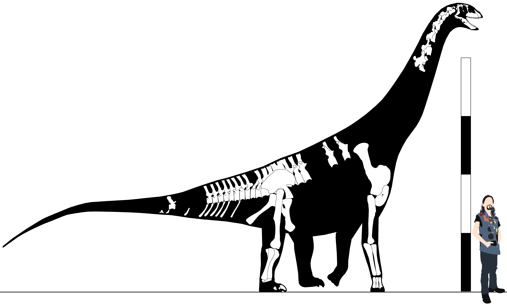
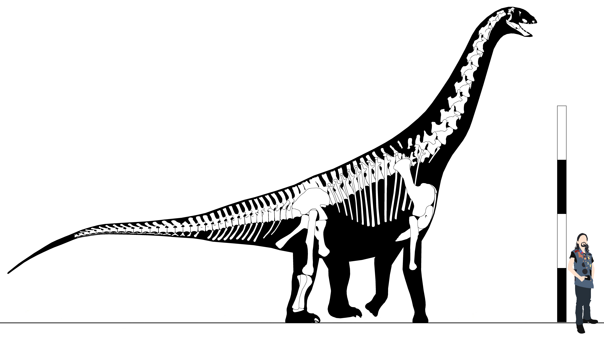

Clade Sauropoda Marsh, 1878b
=Cetiosauria Owen, 1859
=Diplodocia Tornier, 1913
Definition - (Saltasaurus loricatus <- Melanorosaurus readi) (Yates, 2007)
Diagnosis - enter
Comments - enter
Genus Archaeodontosaurus Buffetaut, 2005
Archaeodontosaurus descouensi Buffetaut, 2005
Middle Jurassic, Bathonian stage
Isalo III Formation
Ambondromamy Village, Majunga Basin, Mahajanga Province, Madgascar
MNHDPal 2003-396 (Holotype) - Dentary (187mm*) (Buffetaut, 2005)
Diagnosis - enter
Comments - Buffetaut (2005) described this as a sauropod of uncertain affinity. Upchurch, et al. (2007) noted that, while
the profile of the dentary is similar to that of Chinshakiangosaurus, the teeth have large serrations set at 45 degrees to the crown,
& the lingual surfaces of the crowns are convex rather than concave. This inconsistency makes Archaeodontosaurus extremely difficult
to place. Because of this, I leave Archaeodontosaurus as Sauropoda incertae sedis. It is possibly a basal eusauropod.
Genus Chinshakiangosaurus Ye vide Dong, 1992
Chinshakiangosaurus chunghoensis Ye vide Dong, 1992
Early Jurassic, Hettangian stage
Fengjiahe Formation
Yungyin County, Yunnan Province, China
IVPP v14474 (Holotype) - Dentary (274mm*) (Dong, 1992)
Diagnosis - enter
Comments - enter
Genus Gongxianosaurus He et al. 1998
Gongxianosaurus shibeiensis He et al. 1998
Age
Formation
Locality Data
Specimens
Diagnosis - enter
Comments - enter
Genus Isanosaurus Buffetaut et al. 2000
Isanosaurus attavipachi Buffetaut et al. 2000
Late Triassic?
Nam Phong Formation
Phu Nok Khian Hill, Chaiyaphum Province, Thailand
CH4 (Holotype) - Cervical centrum, posterior dorsal neural arch, rib fragments, six caudals, two chevrons, partial right scapula, right sternal, left femur (760mm)
Diagnosis - enter
Comments - Buffetaut, et al. (2000) considered this specimen to be late Triassic in age, however subsequent authors have suggested
a more recent timeframe. Racey & Goodall (2009) suggested it was no older than the Pliensbachian stage, & may in fact be from the late Jurassic.
Genus Kholumolumo Fabrègues & Allain, 2020
=”Thotobolosaurus” Ellenberger, 1970
=”Kholumolumosaurus” Gauffre, 1996
Kholumolumo ellenbergerorum Fabrègues & Allain, 2020
=”Thotobolosaurus mabeatae” Ellenberger, 1970
=”Kholumolumosaurus ellenbergerorum” Gauffre, 1996
Late Triassic, Norian-Rhaetian stages
Lower Member, Elliot Formation
Maphutseng, Mohale's Hoek District, Lesotho
MNHN.F.LES381m (Holotype) - Tibia (510mm)
MNHN.F.LES26 - Mc I (97mm)
MNHN.F.LES29 - MP I-1 (85mm)
MNHN.F.LES32 - D7-12? (120mm)
MNHN.F.LES76 - Mc IV (103mm)
MNHN.F.LES77 - Mt V (111mm)
MNHN.F.LES81 - Mt II (180mm)
MNHN.F.LES82 - Mt III (219mm)
MNHN.F.LES89 - Mt I (133mm)
MNHN.F.LES92 - Mc II (125mm)
MNHN.F.LES93 - Mc III (143mm)
MNHN.F.LES147 - Radius (320mm)
MNHN.F.LES152 - Ischium (315mm)
MNHN.F.LES155 - S2 (101mm)
MNHN.F.LES159 - Ulna (390mm)
MNHN.F.LES168 - Cd1-5? (90mm)
MNHN.F.LES169 - Cv10 (132mm)
MNHN.F.LES374 - Fibula (575mm)
MNHN.F.LES375a - Ilium (590mm)
MNHN.F.LES376 - Cd5-15? (105mm)
MNHN.F.LES378 - Pubis (665mm)
MNHN.F.LES379 - Humerus (685mm)
MNHN.F.LES381c - Mt IV (230mm)
MNHN.F.LES386 - Scapula (720mm)
MNHN.F.LES394 - Femur (755mm)
Diagnosis - enter
Comments - Ellenberger & Ellenberger (1956a) first reported on the discovery of a new prosauropod from Maphutseng, & Ellenberger & Ellenberger (1960)
considered it a quadrupedal prosauropod in the vein of Euskelosaurus or Melanorosaurus. Ellenberger (1964) assigned it to Euskelosaurus as all
early Southern African sauropodomorphs are destined to place in at least once. Charig, et al. (1965) assigned it to Melanorosauridae Indet., & Ellenberger & Ginsburg
(1966) considered it to belong to Euskelosaurus browni. Ellenberger (1970) finally recognized this to be a new species of dinosaur, & informally named it
“Thotobolosaurus mabeatae”. Gauffre (1993a) also lumped “Thotobolosaurus” into Euskelosaurus, before he later (1996) also recognized it as a new genus, & he
coined the (also informal) name “Kholumolumosaurus ellenbergerorum”. De Ricqlès, et al. (2003) was the last time someone assigned MNHN.F.LES381 to
Euskelosaurus. Knoll (2004) assigned it to Plateosauridae Indet.
Genus Kotasaurus Yadagiri, 1988
Kotasaurus yamanpalliensis Yadagiri, 1988
Early Jurassic, Sinemurian-Pliensbachian stages
Kota Formation
Telengana, India
21/SR/PAL (Holotype) - Ilium
#? - Tail clubs (140-308mm) (Kareem & Wilson, 2018)
Diagnosis - Tail club ventrally segmented (1), with a distinct posterodorsal depression (2).
Comments - The earliest known sauropod to possess a tail club.
Genus Leonerasaurus Pol, Garrido, & Cerda, 2011
Leonerasaurus taquetrensis Pol, Garrido, & Cerda, 2011
Early Jurassic, Sinemurian stage
Upper Member, Las Leoneras Formation
Cañadón Las Leoneras, Chubut Province, Argentina
MPEF-Pv 1663 (Holotype) - D3 (40.8mm*), Cv4 (47.1mm*), Cv5 (50.8mm*), D1 (40.1mm*), D2 (38mm*), D3 (41.8mm*), D4 (42.3mm*), mid-dorsal (42.7mm*), S1 (46.9mm*), S2 (43mm),
S3 (43mm), humerus (202.8mm*), Mt I (67mm)
Diagnosis - enter
Comments - Pol, Garrido, & Cerda (2011) recovered Leonerasaurus as sister to Melanorosaurus+Sauropoda, but McPhee, et al. (2015) recovered it as a sauropod more
derived than Antetonitrus & Lessemsaurus.
Genus Pulanesaura McPhee et al. 2015
Pulanesaura eocollum McPhee et al. 2015
Early Jurassic, Hettangian stage
Upper Member, Elliot Formation
Spion Kop 632, Sauropod Quarry, Senekal District, Free State, South Africa
BP/1/6982 (Holotype) -
BP/1/6105 - Proximal Caudal (Yates, Hancox, & Rubidge, 2004)
Diagnosis - enter
Comments - BP/1/6105 was originally described by Yates, Hancox, & Rubidge (2004) as belonging to a Vulcanodon-grade sauropod.
Genus Sanpasaurus Youngi, 1944
Sanpasaurus yaoi Young, 1944
Jurassic
Maanshan Member, Ziliujing Formation
Sichuan Province, China
IVPP V.156 (Holotype)
Diagnosis - enter
Comments - enter
Genus Schleitheimia Insert authority here
Schleitheimia schutzi Insert authority here
Age
Formation
Locality Data
Specimens
Diagnosis - enter
Comments - enter
"Antarctic sauropod" Joyce, 2004
Early Jurassic, middle Lias epoch, Sinemurian stage
Hanson Formation
Antarctica
Augustana College #? - Skeleton including vertebrae, pelvis, limb elements (Joyce, 2004)
Diagnosis - None, undescribed.
Comments - This specimen was discovered in 2003 & will be described by William Hammer at some point in the future (Joyce, 2004). This shows
that sauropods had already spread to Antarctica by the earliest Jurassic & were in direct competition with prosauropods here (e.g., Glacialisaurus).
Family Lessemsauridae Apaldetti, et al. 2018
Definition - enter
Diagnosis - enter
Comments - enter
Genus Ingentia Apaldetti, et al. 2018
Ingentia prima Apaldetti, et al. 2018
Late Triassic, late Norian-early Rhaetian stages
Quebrada del Barro Formation
Locality Data
PVSJ 1086 (Holotype)
PVSJ 1087 - Five caudals, radii, ulnae
Diagnosis - enter
Comments - enter
Genus Lessemsaurus Bonaparte, 1999
Lessemsaurus sauropoides Bonaparte, 1999
Age
Formation
Locality Data
Specimens
Diagnosis - enter
Comments - enter
Genus Antetonitrus Yates & Kitching, 2003
Antetonitrus ingenipes Yates & Kitching, 2003
Age
Formation
Locality Data
Specimens
Diagnosis - enter
Comments - enter
Genus Ledumahadi McPhee et al. 2018
Ledumahadi mafube McPhee et al. 2018
Early Jurassic, Lias epoch
Elliot Formation
Free State Province, South Africa
Specimens
Diagnosis - enter
Comments - Sometimes referred to before description as the “Highland Giant” (this moniker has often been wrongly associated
with the large non-sauropod sauropodomorph also from the Elliot formation).
Clade Gravisauria Allain & Asquesbi, 2008
Definition - enter
Diagnosis - enter
Comments - enter
Genus Zizhongosaurus Dong, Zhou, & Zhang, 1983
Zizhongosaurus chuangchengensis Dong, Zhou, & Zhang, 1983
Age
Formation
Locality Data
Specimens
Diagnosis - enter
Comments - enter
Zizhongosaurus"huangshibanensis" Li vide Li, Zhang, & Cai, 1999
Jurassic
Red Beds, Sichuan Province, China
Diagnosis - None, undescribed.
Comments - This name has only appeared in the faunal list of Li, Zhang, & Cai (1999), so it is a nomen nudum. It is uncertain whether this is properly referred to
Zizhongosaurus
Family Vulcanodontidae Cooper, 1984
Definition - enter
Diagnosis - enter
Comments - enter
Genus Ohmdenosaurus Wild, 1978
Ohmdenosaurus liasicus Wild, 1978
Early Jurassic, late Lias epoch, Toarcian stage
Posidonia Shale Formation
Ohmden, Holzmaden (Epsilon II-4), Baden-Württemberg, Germany
MH #? (Holotype) - Tibia (405mm), astragalus (140mm)
Diagnosis - enter
Comments - enter
Genus Tazoudasaurus Allain et al. 2004
Tazoudasaurus naimi Allain et al. 2004
Early Jurassic, middle Lias epoch, Pliensbachian stage
Toundoute Group
Douar of Tazouda, Locality A, Ouarzazate, Morocco
To 2000-1 (Holotype)
Diagnosis - enter
Comments - enter
Genus Vulcanodon Raath, 1972
Vulcanodon karibaensis Raath, 1972
Early Jurassic, early to middle Lias epoch, Hettangian to Sinemurian stages
Batoka Formation
Vulcanodon Site, Island 126/127, Lake Kariba, Zimbabwe
QG24 (Holotype)
QG152
Diagnosis - enter
Comments - The age of the Vulcanodon Beds has been the subject of debate for some time. Raath & Cooper considered it the earliest known sauropod (before
Triassic species like Vulcanodon were discovered), & McIntosh (1990a), Upchurch (1995), & Upchurch, Barrett, & Dodson (2004) all agreed on this, listing
the age of the Beds as Hettangian-Sinemurian. Yates (2004) & Wilson (2005b) considered Vulcanodon to be Toarcian in age, however, Viglietti, et al. (2017)
suggested that the originally suggested Hettangian-Sinemurian age was correct.
Clade Eusauropoda Upchurch, 1995
Definition - enter
Diagnosis - enter
Comments - enter
Genus Bagualia Pol et al. 2020
Bagualia alba Pol et al. 2020
Early Jurassic, late Lias epoch, Toarcian stage
Cañadón Asfalto Formation
Bagual Canyon, Cerro Cóndor, Chubut Province, Argentina
MPEF-Pv 3301 (Holotype) (Total length 9.92m) - Partial skull, atlas, axis, Cv3, Cv4, Cv5, Cv6, Cv7 (Pol, et al. 2020)
MPEF-Pv 3202 (Paratype) - Dentaries, right surangular (Pol, et al. 2020)
MPEF-Pv 3204 (Paratype) - Right maxilla (Pol, et al. 2020)
MPEF-Pv 3300 (Paratype) - Caudal (Pol, et al. 2020)
MPEF-Pv 3303 (Paratype) - Femur (Pol, et al. 2020)
MPEF-Pv 3304 (Paratype) - Left maxilla (Pol, et al. 2020)
MPEF-Pv 3305 (Paratype) - Left premaxilla (Pol, et al. 2020)
MPEF-Pv 3306 (Paratype) - Fibula (Pol, et al. 2020)
MPEF-Pv 3307 (Paratype) - Astragalus (Pol, et al. 2020)
MPEF-Pv 3308 (Paratype) - Astragalus (Pol, et al. 2020)
MPEF-Pv 3310 (Paratype) - Pedal ungual phalanx (Pol, et al. 2020)
MPEF-Pv 3311 (Paratype) - Humerus (Pol, et al. 2020)
MPEF-Pv 3312 (Paratype) - Ulna (Pol, et al. 2020)
MPEF-Pv 3313 (Paratype) - Radius (Pol, et al. 2020)
MPEF-Pv 3319 (Paratype) - Caudal (Pol, et al. 2020)
MPEF-Pv 3322 (Paratype) - Caudal (Pol, et al. 2020)
MPEF-Pv 3324 (Paratype) - Caudal (Pol, et al. 2020)
MPEF-Pv 3327 (Paratype) - Cervical (Pol, et al. 2020)
MPEF-Pv 3331 (Paratype) - Caudal (Pol, et al. 2020)
MPEF-Pv 3332 (Paratype) - Metacarpal (Pol, et al. 2020)
MPEF-Pv 3333 (Paratype) - Metacarpal (Pol, et al. 2020)
MPEF-Pv 3334 (Paratype) - Metacarpal (Pol, et al. 2020)
MPEF-Pv 3335 (Paratype) - Pedal phalanx (Pol, et al. 2020)
MPEF-Pv 3337 (Paratype) - Ischium (Pol, et al. 2020)
MPEF-Pv 3338 (Paratype) - Humerus (Pol, et al. 2020)
MPEF-Pv 3339 (Paratype) - Right surangular (Pol, et al. 2020)
MPEF-Pv 3340 (Paratype) - Right nasal (Pol, et al. 2020)
MPEF-Pv 3341 (Paratype) - Left maxilla (Pol, et al. 2020)
MPEF-Pv 3346 (Paratype) - Caudal (Pol, et al. 2020)
MPEF-Pv 3348 (Paratype) - Cervical (Pol, et al. 2020)
MPEF-Pv 3349 (Paratype) - Cervical (Pol, et al. 2020)
MPEF-Pv 3351 (Paratype) - Chevron (Pol, et al. 2020)
MPEF-Pv 3352 (Paratype) - Chevron (Pol, et al. 2020)
MPEF-Pv 3353 (Paratype) - Chevron (Pol, et al. 2020)
MPEF-Pv 3354 (Paratype) - Chevron (Pol, et al. 2020)
MPEF-Pv 3355 (Paratype) - Chevron (Pol, et al. 2020)
MPEF-Pv 3356 (Paratype) - Chevron (Pol, et al. 2020)
MPEF-Pv 3357 (Paratype) - Chevron (Pol, et al. 2020)
MPEF-Pv 3358 (Paratype) - Chevron (Pol, et al. 2020)
MPEF-Pv 3359 (Paratype) - Chevron (Pol, et al. 2020)
MPEF-Pv 3369 (Paratype) - Ilium (Pol, et al. 2020)
MPEF-Pv 3371 (Paratype) - Femur (Pol, et al. 2020)
MPEF-Pv 3374 (Paratype) - Tibia (Pol, et al. 2020)
MPEF-Pv 3376 (Paratype) - Fibula (Pol, et al. 2020)
MPEF-Pv 3377 (Paratype) - Pubis (Pol, et al. 2020)
MPEF-Pv 3379 (Paratype) - Ulna (Pol, et al. 2020)
MPEF-Pv 3380 (Paratype) - Humerus (Pol, et al. 2020)
MPEF-Pv 3381 (Paratype) - Humerus (Pol, et al. 2020)
MPEF-Pv 3382 (Paratype) - Scapula (Pol, et al. 2020)
MPEF-Pv 3383 (Paratype) - Scapula (Pol, et al. 2020)
MPEF-Pv 3384 (Paratype) - Scapula (Pol, et al. 2020)
MPEF-Pv 3385 (Paratype) - Scapulocoracoid (Pol, et al. 2020)
MPEF-Pv 3386 (Paratype) - Scapulocoracoid (Pol, et al. 2020)
MPEF-Pv 3387 (Paratype) - Coracoid (Pol, et al. 2020)
MPEF-Pv 3390 (Paratype) - Chevron (Pol, et al. 2020)
MPEF-Pv 3408 (Paratype) - Cervical (Pol, et al. 2020)
MPEF-Pv 3410 (Paratype) - Pedal ungual phalanx (Pol, et al. 2020)
MPEF-Pv 11000 (Paratype) - Dorsal (Pol, et al. 2020)
MPEF-Pv 11009 (Paratype) - Chevron (Pol, et al. 2020)
MPEF-Pv 11010 (Paratype) - Chevron (Pol, et al. 2020)
MPEF-Pv 11011 (Paratype) - Two dorsal neural arches , partial sacrum, Cd1 through 10, both ilia (Pol, et al. 2020)
MPEF-Pv 11016 (Paratype) - Ischium (Pol, et al. 2020)
MPEF-Pv 11018 (Paratype) - Calcaneum (Pol, et al. 2020)
MPEF-Pv 11019 (Paratype) - Pubis (Pol, et al. 2020)
MPEF-Pv 11020 (Paratype) - Humerus (Pol, et al. 2020)
MPEF-Pv 11021 (Paratype) - Femur (Pol, et al. 2020)
MPEF-Pv 11022 (Paratype) - Femur (Pol, et al. 2020)
MPEF-Pv 11023 (Paratype) - Dorsal (Pol, et al. 2020)
MPEF-Pv 11024 (Paratype) - Femur (Pol, et al. 2020)
MPEF-Pv 11025 (Paratype) - Chevron (Pol, et al. 2020)
MPEF-Pv 11027 (Paratype) - Dorsal (Pol, et al. 2020)
MPEF-Pv 11028 (Paratype) - Pedal phalanx (Pol, et al. 2020)
MPEF-Pv 11029 (Paratype) - Pedal phalanx (Pol, et al. 2020)
MPEF-Pv 11040 (Paratype) - Cervical (Pol, et al. 2020)
MPEF-Pv 11044 (Paratype) - Chevron (Pol, et al. 2020)
MPEF-Pv 11049 (Paratype) - Pedal phalanx (Pol, et al. 2020)
Diagnosis - enter
Comments - enter

Skeletal reconstruction of Bagualia alba, including unfigured postcervical material. Scale bar equals 4m, scaled as holotype.
Genus Barapasaurus Jain et al. 1975
Barapasaurus tagorei Jain et al. 1975
Age
Formation
Locality Data
Specimens
Diagnosis - enter
Comments - enter
Genus Fushanosaurus Wang et al. 2019
Fushanosaurus qitaiensis Wang et al. 2019
Late Jurassic, middle Malm epoch, Kimmeridgian stage
Shishugou Formation
Qitai Area, Junggar Basin, Xinjiang Province, China
FH0001001 (Holotype) - Right femur (180cm)
Diagnosis - enter
Comments - Wang, et al. (2019) described this as belonging to a titanosauriform, but the supposed characters actually have a much
broader distribution within Sauropoda, being seen in taxa such as Chuanjiesaurus & Jobaria (Xu, et al. 2022).
Genus Jobaria Sereno et al. 1999
Jobaria tiguidensis Sereno et al. 1999
Middle Jurassic, middle Dogger epoch, Bathonian stage
Tiourarén Formation
Támerat, L'lrhazer plain, Agadez, Niger
MNBH TIG3 (Holotype) - Twelve cervicals, 33 caudals, 20 chevrons, forelimb including humerus (1310mm), Mc I (360mm), pubes
MNBH TIG4 - D10-12, ribs, sacrum, anterior caudals, ilium, femur (Vidal, 2019)
MNBH TIG6 - Axis-Cv11 (Vidal, 2019)
MNBH TIG9 - Axis-Cv13, D1-9, several caudals, radius, ulna, femur, tibia, fibula (Vidal, 2019)
Diagnosis - enter
Comments - enter
Genus Nebulasaurus Xing et al. 2015b
Nebulasaurus taito Xing et al. 2015b
Middle Jurassic, early to middle Dogger epoch, Aalenian to Bajocian stages
Zhanghe Formation
Yunnan Province, China
LDRC-v.d.1 (Holotype) - Braincase
Diagnosis - enter
Comments - enter
Genus Protognathosaurus Olshevsky, 1991
=Protognathus Zhang, 1988 (preoccupied name)
Protognathosaurus oxyodon Zhang, 1988
=Protognathus oxyodon Zhang, 1988 (preoccupied name)
Middle Jurassic, late Dogger epoch, Callovian stage
Xiashaximiao Formation
Dashanpu Dinosaur Quarry, Sichuan Province, China
CV 00732 (Holotype) - Dentary
Diagnosis - enter
Comments - Originally named Protognathus oxyodon Zhang (1988), this genus name is preoccupied by a beetle (Basilewsky, 1950), so
Olshevsky (1991) created the new genus name Protognathosaurus for this taxon.
Genus Rhoetosaurus Longman, 1926
Rhoetosaurus brownei Longman, 1926
Middle Jurassic, middle to late Dogger epoch, late Bathonian to middle Callovian stages
"Eurombah" Formation, Walloon Coal Measures
Eurombah Creek, Taloona Station, Queensland, Australia
QM F1659 (Hypodigm) - Two cervicals, five dorsals, partial dorsal ribs, partial sacrum, 22 caudals including Cd4 (140mm), Cd5 (136mm), Cd6 (137mm),
Cd7 (135mm), Cd8 (135mm), Cd9 (140mm), Cd10 (142mm), Cd11 (160mm), Cd12 (150mm), Cd13 (158mm), Cd14 (150mm), Cd15 (152mm), Cd16 (158mm), Cd17 (157mm),
Cd18 (155mm), Cd19, Cd24 (157mm), chevrons, fragmentary ilia, ischium, pubes, right femur, right tibia (855mm*), right fibula (626mm*), right
astragalus (345mm), Mt I (230mm), PP I-1 (88mm), PUP I (250mm), Mt II (270mm), PP II-1 (86mm), PP II-2 (56mm), PUP II (205mm), Mt III (289mm), PP III-1
(82mm), PP III-2 (32mm), PP III-3 (42mm), PUP III (159mm), Mt IV (269mm), PP IV-1 (99mm), PP IV-2 (50mm), PUP IV (144mm) (Longman, 1926; Nair &
Salisbury, 2012)
Diagnosis - enter
Comments - enter
Genus Shunosaurus Dong, Zhou, & Zhang, 1983
Shunosaurus lii Dong, Zhou, & Zhang, 1983
Middle Jurassic, late Dogger epoch, Callovian stage
Xiashaximiao Formation
Dashanpu Dinosaur Quarry, Sichuan Province, China
IVPP V9065 (Holotype)
Diagnosis - enter
Comments - enter
Shunosaurus jiangyiensis Fu & Zhang, 2004
Middle Jurassic, late Dogger epoch, Callovian stage
Xiashaximiao Formation
Jiangyi Township, Yuanmou County, Yunnan Province, China
Specimens
Diagnosis - enter
Comments - enter
Shunosaurus"ziliujingensis" Zhang, 1995
Middle Jurassic, late Dogger epoch, Callovian stage
Xiashaximiao Formation
Dashanpu Dinosaur Quarry, Sichuan Province, China
ZDM #? - Skull, partial skeleton
Diagnosis - None, undescribed.
Comments - This name was only published in a Zigong Museum guidebook (it is the middle of the three Shunosaurus skeletons on display), though a
description alledgedly exists. Reid (online, 2019) suggests this
is the same as Shunosaurus jiangyiensis, though this has not yet been confirmed, & the supposed locality data would suggest otherwise.
Genus Spinophorosaurus Remes et al. 2009
Spinophorosaurus nigeriensis Remes et al. 2009
Middle to late Jurassic, Dogger to Malm epochs
Falaise de Tiguidit, Tegama Group
Aderbissinat, Thirozerine Dept., Agadez Region, Niger
NMB-1699-R (=GCP-PV-4229) (Holotype) (Total length 11.78m) - Postorbital, squamosal, quadrate, pterygoid, surangular, braincase, teeth, axis, Cv3, Cv4, Cv5,
Cv6, Cv7, Cv8, Cv9, Cv10, Cv11, Cv12, D1, D2, D3, D4, D5, D6, D7, D8, D9, D10, D11, D12, D13, dorsal ribs, sacrum, Cd1, Cd2, Cd3, Cd4, Cd5, Cd6, Cd7, Cd8,
Cd9, Cd10, Cd11, Cd12, Cd13, Cd14, Cd15, Cd16, Cd17, Cd18, Cd19, Cd20, Cd21, Cd22, Cd23, Cd24, Cd25, Cd26, Cd27, Cd28, Cd29, Cd30, Cd31, chevrons, scapulae
(1243mm), coracoid, ilia, ischia, pubes, right femur, right tibia, right fibula, right astragalus (Vidal, 2019)
NMB-1698-R (Paratype) (Total length 13.12m) - Premaxilla, maxilla, lacrimal, postorbital, squamosal, pterygoid, dentary, angular, surangular, teeth, partial
postcranial skeleton including six cervicals, ribs, left scapula (1374mm), right humerus (1121mm), pedal phalanx (Vidal, 2019)
GCP-CV-BB-15 - Axis, Cv3, Cv4, Cv5, Cv6, Cv7, Cv8, Cv9, Cv10, Cv11, Cv12, D1, D2, anterior dorsal centrum, mid-dorsal centrum, dorsal neural arch, rib
fragments (Vidal, 2019)
Diagnosis - enter
Comments - The elements originally described as distal caudal spikes have been reidentified as clavicles (Tschopp & Mateus, 2013a).
Recent research by Vidal (2019) has shown that this taxon was significantly more vertically oriented than previously thought, with a well-wedged sacrum that tilted
the entire presacral column upward. The lower forelimbs are not preserved, but cross-scaling with closely related taxa such as Turiasaurus suggests they
were fairly long.

Skeletal reconstruction of Bagualia alba, including unfigured postcervical material. Scale bar equals 4m, scaled as holotype.
Genus Genus Insert authority here
Insert binomial Insert authority here
Age
Formation
Locality Data
Specimens
Diagnosis - enter
Comments - enter
"Moshisaurus" Hasegawa, et al. 1991
Early Cretaceous
Miyako Group
Moshi, Japan
NSMT-Pv 17656 - Partial humerus
Diagnosis - None, indeterminate.
Comments - Hasegawa, et al. (1991) referred this specimen to Mamenchisaurus sp. Later analyses (Azuma & Tomida, 1998; Barrett, et al. 2002) found no
distinguishing features on this humerus & considered it an indeterminate sauropod. Given the Cretaceous age, the specimen may be a neosauropod.
"Yibinosaurus zhoui" Ouyang vide Anonymous, 2001
Early Jurassic, late Lias epoch, Toarcian stage
Dongyuemiao Member, Ziliujing Formation
Sichuan Province, China
Chongqing Museum of Natural History #? - Specimen including dorsals
Diagnosis - None, undescribed.
Comments - The name “Yibinosaurus” first appeared in a guidebook for the Chongqing Museum of Natural History & was stated to be under study by Ouyang. Ouyang's
thesis (2003) described this as “Yibinosaurus zhoui”, which he assigned to Vulcanodontidae. As the ICZN does not consider theses as valid for new nomenclatural acts,
“Yibinosaurus” is currently a nomen nudum.
The anterior dorsal neural spines are transversely expanded, a trait he believes suggests a relationship to taxa with bifurcated spines like Datousaurus. Mortimer
(online) suggests that “Yibinosaurus” is the same taxon described as Gongxianosaurus sp. Nov. by Luo & Wang (1999), since “Yibinosaurus” & Gongxianosaurus
are from the same formation.
"Bornholm sauropod” Milàn & Mateus, 2023
Early Jurassic, middle Lias epoch, Pliensbachian stage
Hasle Formation
Hasle, Bornholm, Denmark
NHMD 1185136 - Maxillary tooth crown (30mm)
Diagnosis - enter
Comments - Milàn & Mateus (2023) considered this to be an extremely early representative of Turiasauria, & suggested that taxa with similarly turiasaurian-type
teeth (Amygdalodon, Bagualia, Spinophorosaurus) may belong in this clade as well, despite a lack of support for this placement based on any non-dental anatomical
characters. Additionally, Milàn & Mateus note the teeth of Bagualia are extremely like the Bornholm specimen, only differing in the lack of denticles on the
latter. However, NHMD 1185136 has well developed wear facets, suggesting that apical denticles may have been present but simply worn away as seen in some teeth of
Bagualia (Pol, et al. 2020).
Family Clade Insert authority here
Definition - enter
Diagnosis - enter
Comments - enter
Genus Amygdalodon Cabrera, 1947
Amygdalodon patagonicus Cabrera, 1947
Early Jurassic, late Lias epoch, Toarcian stage
Cerro Carnerero Formation
Locality Data
MLP 46-VIII-21-1 (Holotype)
Diagnosis - enter
Comments - enter
Genus Cetiosaurus Owen, 1841
Cetiosaurus oxoniensis Phillips, 1871
Middle Jurassic, middle Dogger epoch, Bajocian-Bathonian stages
Formation
Locality Data
Specimens
Diagnosis - enter
Comments - enter
Genus Genus Mahammad et al.2005
Chebsaurus algeriensis Mahammad et al.2005
Middle Jurassic, late Dogger epoch, Callovian stage
Aïssa Formation
Ksour Mountains, Algeria
Specimens
Diagnosis - enter
Comments - enter
Genus Ferganasaurus Alifanov & Averianov, 2003
Ferganasaurus Alifanov & Averianov, 2003
Middle Jurassic, late Dogger epoch, Callovian stage
Balabansai Formation
Kyrgyzstan
PIN N 3042/1 (Holotype) - Two dorsals, 16 caudals, pelvis, appendicular elements
Diagnosis - enter
Comments - enter
Genus Lapparentosaurus Bonaparte, 1986
Lapparentosaurus madagascariensis Lydekker, 1895
Middle Jurassic, middle Dogger epoch, Bajocian to Bathonian stages
Isalo III Formation
Madagascar
Specimens
Diagnosis - enter
Comments - enter
Genus Patagosaurus Bonaparte, 1979
Patagosaurus fariasi Bonaparte, 1979
Early to middle Jurassic, late Lias to early Dogger epochs, late Toarcian to early Aalenian stages
Cañadón Asfálto Formation
Cerro Cóndor North, Cerro Cóndor, Chubut Province, Argentina
PVL 4170 (Holotype) - Cervicals, dorsals, sacrum, caudals, right ilium (970mm), ischia (350mm), right pubis (550mm), right femur (1175mm)
Diagnosis - enter
Comments - enter
Genus Perijasaurus Rincón et al. 2022
Perijasaurus lapaz Rincón et al. 2022
Early to middle Jurassic, late Lias to early Dogger epochs, late Toarcian to early Aalenian stages
La Quinta Formation
Arroyo Lameador, Department of Cesar, Colombia
UCMP 37689 (Holotype) - D5 (183mm)
Diagnosis - enter
Comments - This specimen was originally recovered by an oil company during the 1940's & was briefly described by Langston & Durham (1955). The specimen was
redescribed by Rincón, et al. (2022), who recovered it in a position more derived than Cetiosaurus, but basal to Patagosaurus, Bagualia, &
Spinophorosaurus.
"Saltwick sauropod" Manning, Egerton, & Romano, 2015
Middle Jurassic, Aalenian stage
Saltwick Formation
Long Bight, Whitby, England, United Kingdom
YORYM:2001.9337 "Alan" - Anterior caudal (70mm)
Diagnosis - Presence of a pronounced ventral keel* (1); amphicoelous anterior caudals (2).
Comments - enter
Family Mamenchisauridae Young & Zhao, 1972
=Omeisauridae Wilson, 2002
Definition - enter
Diagnosis - enter
Comments - Mamenchisaurids were traditionally thought to be isolated to the mid-late Jurassic of China only for the longest time. Recent discoveries have shown
this to be incorrect, as we now have taxa from Thailand, Mongolia, Siberia, England, & even possibly the United States. They also extended into the early Cretaceous,
with remains from Thailand, as well as a redated Suining formation.
Genus Abrosaurus Ouyang, 1989
Abrosaurus dongpoi Ouyang, 1989
Age
Formation
Locality Data
(Holotype) - Skull (456mm)
Diagnosis - enter
Comments - enter
Genus Bellusaurus Dong, 1990
Bellusaurus sui Dong, 1990
Late Jurassic, early Malm epoch, Oxfordian stage
Middle Beds, Shishugou Formation
Konglonggou Area, Junggar Basin, Xinjiang Province, China
IVPP v8299 (Holotype)
IVPP v8300
IVPP v17768 - (Moore, 2013)
IVPP #? - Humerus (350mm), Mc I (65mm) (D'Emic & Foster, 2014)
Diagnosis - enter
Comments - The holotype locality of Bellusaurus as found by the IVPP in 1983 contained hundreds of bones of mostly disarticulated juvenile specimens. In 2003,
a joint expedition by IVPP & the George Washington University (USA) reopened the type quarry, & collected hundreds of specimens comprising at least 24 individuals, based
on the number of preserved left scapulae (Clarke, et al. 2006; Mo, 2013).
Genus Cetiosauriscus Huene, 1927
Cetiosauriscus stewarti Charig, 1980
Middle Jurassic, late Dogger epoch, Callovian stage
Oxford Clay Formation
England, United Kingdom
NHMUK PV R3078 (Holotype)
Diagnosis - enter
Comments - enter
Genus Daanosaurus Ye, Gao, & Jiang, 2005
Daanosaurus zhangi Ye, Gao, & Jiang, 2005
Late Jurassic, early Malm epoch, Oxfordian stage
Shangshaximiao Formation
Yantan District, Zigong Prefecture, Sichuan Province, China
ZDM 0193 (Holotype) - Maxilla, parietal, cervicals, dorsals, ribs, partial ilium, right femur
Diagnosis - enter
Comments - enter
Genus Uintasaurus Holland, 1924a
Uintasaurus douglassi Holland, 1924a
Late Jurassic, late Malm epoch, Tithonian stage
Brushy Basin Member, Zone 5, Morrison Formation
Carnegie Quarry, Dinosaur National Monument, Uintah County, Utah, United States
CM 11069 (Holotype) - Five cervicals
Diagnosis - enter
Comments - While traditionally considered a camarasaurid (usually a synonym of Camarasaurus proper), Tschopp, et al. (2014) recovered Uintasaurus in a polytomy
with Mamenchisaurus, Omeisaurus, & more derived sauropods. Uintasaurus may be closely related to “Barosaurus” affinis, another Tithonian Morrison taxon
that is sometimes recovered close to mamenchisaurids.
"Barosaurus" affinis Marsh, 1899
Late Jurassic, late Malm epoch, Tithonian stage
Brushy Basin Member, Zone 5, Morrison Formation
Piedmont Quarry, Hatch Ranch, Piedmont Butte, Meade County, South Dakota, United States
YPM VP.000419 (Holotype) - Mt I, proximal Mt V (Tschopp, Mateus, & Benson, 2015)
Diagnosis - Presence of a distolateral projection on Mt I (1) (from Tschopp, Mateus, & Benson, 2015).
Comments - Marsh considered this to be another species of Barosaurus, which led to most subsequent authors simply synonymizing this species with B. lentus,
until Tschopp, Mateus, & Benson (2015)'s analyses recovered this specimen as closer to Cetiosauriscus stewarti than any diplodocoids.
“Qitai County mamenchisaurid” Xinhua News Agency, online 2003
Middle to Late Jurassic, Dogger to Malm epochs
Qitai County, Xinjiang Province, China
#? - Hindlimb elements (3m) (Xinhua News Agency, online 2003)
Diagnosis - enter
Comments - It is not entirely clear in the article whether the 3m measurement provided is in reference to an entire hindlimb, or to a single element (presumably the
femur). Assuming the former, it would belong to a mamenchisaurid comparable in size to the Xinjiangtitan type specimens, however if it is the latter it would belong
to a record-breaking near 50m sauropod assuming similar proportions to those of Xinjiangtitan (the only two large named sauropods from the region).
Subfamily Omeisaurinae Wilson, 2002
Definition - All mamenchisaurids closer to Omeisaurus jungshiensis than to Mamenchisaurus constructus (nov.).
Diagnosis - enter
Comments - Wilson (2002) erected Omeisauridae for Mamenchisaurus+Omeisaurus after recovering Euhelopus away from these taxa, though a definition was not
provided.
Genus Anhuilong Ren, Huang, & You, 2018
Anhuilong diboensis Ren, Huang, & You, 2018
Middle Jurassic, Dogger epoch
Hongqin Formation
Hengguan Village, Wangcun Town, Shexian County, Anhui Province, China
AGB 5822 (Holotype) - Humerus (1050mm), radius (530mm), ulna (590mm)
Diagnosis - enter
Comments - enter
Genus Huangshanlong Huang et al. 2014
Huangshanlong anhuiensis Huang et al. 2014
Middle Jurassic, Dogger epoch
Hongqin Formation
Shexian County, Huangshan, Anhui Province, China
AGB 5818 (Holotype) - Humerus (900mm), radius (520mm), ulna (600mm)
Diagnosis - enter
Comments - enter
Genus Omeisaurus Young, 1939
Omeisaurus jungshiensis Young, 1939
Late Jurassic, early Malm epoch, Oxfordian stage
Daanzhai Member, Shaximiao Formation
Hsikuashan, Jungshien, Sichuan Province, China
IVPP #? (Holotype) - Cv8? (450mm), Cv9? (460mm), D9? (120mm), D10? (140mm), dorso-sacral (130mm), S2-4 (320mm), caudo-sacral (500mm), Cd1 (590mm), Cd2 (570mm), Cd3 (530mm),
Cd4 (500mm), Cd5 (500mm), Cd6 (475mm), Cd7 (470mm), Dr3 (745mm*), Dr4 (1650mm), Dr5 (1750mm), Dr6 (1250mm), Dr7 (852mm*), scapula (454mm), humerus (845mm), ilium (772mm),
ischium (683mm), pubis (649mm), fibula (682mm)
Diagnosis - enter
Comments - enter
"Omeisaurus" fuxiensis Dong, Zhou, & Zhang, 1983
Middle Jurassic, late Dogger epoch, Callovian stage
Formation
Locality Data
CV-005 (Holotype) - Basioccipital, partial basisphenoid
Diagnosis - enter
Comments - Different from Zigongosaurus fuxiensis.
"Omeisaurus" tianfuensis He et al. 1984
Middle Jurassic, late Dogger epoch, Callovian stage
Xiashaximiao Formation
Dashanpu Dinosaur Quarry, Sichuan Province, China
ZDM T5701 (Holotype) (Total length 17.99m) - Atlas (20mm*), axis (185mm), Cv3 (275mm), Cv4 (395mm), Cv5 (105mm*), Cv6 (150mm*), Cv7 (620mm), Cv8 (200mm*), Cv11 (300mm*), Cv12
(700mm), Cv13 (705mm), Cv14 (689mm), Cv15 (680mm), Cv16 (551mm), Cv17 (330mm), D1 (240mm), D2 (233mm), D3 (202mm), D4 (154mm), D5 (120mm), D6 (183mm), D7 (186mm), D8 (195mm),
D9 (200mm), D10 (200mm), D11 (181mm), D12 (180mm), Dr2 (260*, 1470mm), Dr3 (1230mm*), Dr4 (1070mm*), Dr5 (600mm*), Dr7 (380mm*), Dr12 (600mm), S2 (136mm), S3 (164mm), S4
(167mm), S5 (178mm), Cd1 (164mm), Cd2 (110mm), Cd3 (123mm), Cd4 (143mm), Cd5 (110mm), Cd6 (135mm), Cd7 (130mm), Cd8 (144mm), Cd9 (137mm), Cd10 (130mm), Cd11 (140mm), Cd12
(136mm), Cd13 (146mm), Cd14 (143mm), Cd15 (148mm), Cd16 (142mm), Cd17 (144mm), Cd18 (150mm), Cd19 (148mm), Cd20 (144mm), Cd21 (146mm), Cd22 (137mm), Cd23 (134mm), Cd24 (144mm),
Cd25 (145mm), Ch2 (380mm), Ch3 (373mm), Ch4 (330mm), Ch5 (309mm*), Ch6 (340mm), Ch7 (300mm), Ch8 (290mm), Ch9 (302mm), Ch10 (257mm), Ch11 (252mm), Ch12 (228mm), Ch13 (182mm),
Ch14 (164mm), Ch15 (144mm), Ch18 (83mm), Ch19 (76mm), Ch23 (69mm), Ch24 (83mm), left scapula (1380mm), left coracoid (570mm), right sternal (460mm), humerus (1080mm), radius
(755mm), Mc I (210mm), Mc II (280mm), Mc III (240mm), ilia (855, 860mm), ischia (951, 950mm), pubes (733*, 754mm), left femur (1310mm), left tibia (820mm), left fibula (880mm),
left astragalus (152mm), Mt I (192mm), Mt II (202mm), Mt III (229mm), Mt IV (211mm), Mt V (189mm) (He, Li, & Cai, 1988)
ZDM T5702 (Paratype) - Skull (610mm), partial mandible, humerus (920mm), radius (600mm), ulna (640mm) (He, Li, & Cai, 1988)
ZDM T5045 - Tail club (212mm) (Dong, Peng, & Huang, 1989)
ZDM T5046 - Tail club (205mm) (Dong, Peng, & Huang, 1989)
ZDM T5048 - Tail club (173mm) (Dong, Peng, & Huang, 1989)
ZDM T5049 - Tail club (190mm) (Dong, Peng, & Huang, 1989)
ZDM T5052 - Tail club (200mm) (Dong, Peng, & Huang, 1989)
ZDM T5703 - mandibles (549, 550mm), atlas (32mm*), axis (170mm), Cv3 (241mm), Cv4 (368mm), Cv5 (495mm), Cv6 (595mm), Cv7 (670mm), Cv8 (673mm), Cv9 (770mm), Cv10 (690mm), Cv11
(640mm), Cv12 (520mm*), scapula (1320mm), coracoid (450mm), humerus (940mm), radius (660mm), ulna (740mm), Mc I (185mm), Mc II (220mm), Mc III (228mm), Mc IV (168mm), femur
(1310mm) (He, Li, & Cai, 1988)
ZDM T5704 - Cv3 (270mm), Cv11 (720mm), Cv12 (680mm), Cv13 (625mm), Cv14 (600mm), Cv15 (545mm), Cv16 (500mm), Cv17 (335mm), D1 (250mm), D2 (250mm), D3 (205mm), D4 (190mm), D5
(220mm), D6 (195mm), D7 (210mm), D8 (180mm), D9 (180mm), D10 (170mm), D11 (185mm), D12 (185mm), Dr3 (620mm*), Dr5 (690*, 249mm*), Dr6 (2000mm), Dr7 (157mm*), Dr8 (750mm*),
Dr10 (252mm*), S2 (185mm), S3 (145mm), S4 (165mm), S5 (175mm), Cd2 (140mm), Cd3 (145mm), Cd4 (150mm), Cd5 (141mm), Cd6 (124mm), Cd7 (126mm), Cd8 (122mm), Cd9 (115mm), Cd10
(140mm), Cd11 (140mm), Cd12 (123mm), Cd13 (140mm), Cd14 (137mm), Cd15 (140mm), Cd16 (136mm), Cd17 (137mm), Cd18 (138mm), Cd19 (147mm), Cd20 (152mm), Cd21 (152mm), Cd22 (150mm),
Cd23 (145mm), Cd24 (145mm), Cd25 (150mm), Cd26 (136mm), Cd27 (138mm), Cd28 (125mm), Cd29 (120mm), Cd30 (115mm), Cd31 (108mm), Cd32 (102mm), Cd33 (102mm), Cd34 (79mm), Cd35
(75mm), Cd36 (68mm), scapula (1330mm), right coracoid (525mm), left clavicle (850mm*), humerus (1040mm), radius (771mm), ulna (835mm), Mc I (192mm), PP I-1 (85mm), PUP I
(205mm), Mc II (252mm), Mc III (244mm), PP III-1 (80mm), Mc IV (235mm), Mc V (162mm), ilia (860, 880mm), ischia (811*, 857mm), pubes (730, 727mm), femora (1263, 1280mm), tibiae
(858, 876mm), fibulae (915, 923mm), right astragalus (161mm), Mt I (165mm), PP I-1 (75mm), PUP I (197mm), Mt II (215mm), PP II-1 (84mm), PUP II (160mm), Mt III (222mm), PP III-1
(87mm), PP IV-1 (81mm), Mt V (180mm) (He, Li, & Cai, 1988)
ZDM T5705 - partial mandible, humerus (990mm), radius (750mm), ulna (860mm), ilia (620, 615mm), ischia (740*, 770mm), pubes (690, 685mm), femora (1160, 1160mm), tibiae (740,
725mm), fibulae (765, 750mm), right astragalus (127mm) (He, Li, & Cai, 1988)
ZDM T5710 - Cv7 (101mm), D4 (58mm), partial D5, D6 (58mm), D7 (60mm), partial D8, S1 (68mm), S5 (78mm), Cd2 (63mm), Cd5 (48mm), Cd6 (45mm), Cd7 (46mm), Cd8 (47mm), Cd9 (48mm),
scapula (610mm), humerus (400mm), radius (280mm), ilia (321, 318mm), ischium (325mm), pubis (318mm), femur (500mm) (He, Li, & Cai, 1988)
Diagnosis - enter
Comments - Skull very large relative to body, much more so than other sauropods.
Tan, et al. (2018; 2020) considered this species, “O.” luoquanensis, & “O.” puxiani to be closer to each other than other species within the Omeisaurus cluster.
"Omeisaurus" luoquanensis He, Li, & Cai, 1988
Middle Jurassic, late Dogger epoch, Callovian stage
Xiashaximiao Formation
Luoquan Village, Zizhong County, Sichuan Province, China
IVPP V21501 (Holotype) - Partial cervical centrum (190mm*), two cervical neural spines, ten dorsal neural spines, 20 dorsal ribs, three sacral neural spines, Cd2 (85mm), Cd3
(90mm), Cd4 (115mm), Cd5 (115mm), Cd6 (110mm), Cd7 (130mm), Cd8 (120mm), Cd9 (130mm), Cd10 (130mm), Cd11 (135mm), four distal caudals (140, 130, 125, 85mm*), seven chevrons,
partial right scapula (610mm*), right humerus (1120mm*), right ilium (800mm*), right pubis (410mm*), right femur (1340mm) (He, Li, & Cai, 1988)
IVPP V21502 (Paratype) - Proximal right scapula (530mm*), partial right tibia (580mm*), partial right fibula (750mm*) (He, Li, & Cai, 1988)
Diagnosis - enter
Comments - enter
"Omeisaurus" jiaoi Jiang et al. 2011
Middle Jurassic, late Dogger epoch, Callovian stage
Xiashaximiao Formation
Dashanpu Dinosaur Quarry, Sichuan Province, China
ZDM T5050 (Holotype) - D1 (260mm), D2 (210mm), D3 (220mm), D4 (210mm), D5 (220mm), D6 (200mm), D7 (210mm), D8 (207mm), D9 (205mm), D10 (203mm), D11 (195mm), D12 (170mm*), Cd1
(110mm), Cd2 (93mm), Cd3 (100mm), Cd4 (110mm), Cd5 (115mm), Cd6 (115mm), Cd7 (117mm), Cd8 (115mm), Cd9 (120mm), Cd10 (120mm), Cd11 (115mm), Cd12 (117mm), Cd13 (123mm), Cd14
(120mm), Cd15 (120mm), Cd16 (121mm), Cd17 (128mm), Cd18 (128mm), Cd19 (124mm), Cd20 (120mm), Cd21 (120mm), Cd22 (125mm), Cd23 (120mm), Cd24 (120mm), Cd25 (115mm), Cd26 (115mm),
tail club (195mm), right scapula (1620mm*), humeri (1160, 1120mm), radii (840, 820mm), ulnae (840*, 875mm), ilium (940mm*), left ischium (740mm), femora (1400, 950mm*), tibiae
(875, 900mm), fibulae (900, 935mm) (Dong, Peng, & Huang, 1989; Jiang, et al. 2011)
Diagnosis - enter
Comments - enter
"Omeisaurus" puxiani Tan et al. 2020
Middle Jurassic, late Dogger epoch, Early Callovian stage
Lower Member, Xiashaximiao Formation
Laojun Village, Pu'an Town, Yunyang County, Chongqing Municipality, China
CLGRP V00005 (Holotype) - Cv8 (310mm*), Cv9 (670mm), Cv10 (240mm*), Cv11 (580mm*), Cv12 (625mm), Cv13 (600mm), Cv14 (350mm*), Cv15 (180mm*), Cv16 (310mm), Cv17 (235mm), D1
(183mm), D2 (180mm), D3 (180mm), D4, D5, D6 (155mm), D7 (97mm*), D8 (155mm), D9 (150mm), D10, D11, D12 (142mm), rib fragments, S1, fragmentary S5, Cd1 (81mm*), Cd2 (87mm*), Cd3
(96mm), Cd4 (91mm), Cd5 (91mm), Cd6 (89mm), Cd7 (88mm), Cd8 (92mm), Cd9, Cd10, six middle caudals (112, 104, 102, 99, 70mm*), four posterior caudals (97, 93, 91, 89mm), chevron
fragments, partial clavicle (420mm*), partial right humerus (850mm*), right radius, two carpals, Mc I (135mm), PP I-1, PUP I (136mm), Mc II (190mm), PP II-1, Mc III (185mm), Mc
IV (157mm), PP IV-1 (39mm), Mc V (150mm), PP V-1, partial left ilium (190mm*), partial femora, distal right tibia, fragmentary right tibia (Tan et al. 2020)
CLGRP V00001 (=S66) - Partial mid-cervical (720mm**) (Tan et al. 2018)
Diagnosis - enter
Comments - enter
"Omeisaurus" sp. Dong, Zhou, & Zhang, 1983
Late Jurassic, early Malm epoch, early Oxfordian stage
Lower Member, Shangshaximiao Formation
Wujiaba Dam, Zigong County, Sichuan Province, China
CV-001 - Skull (420mm) (Dong, Zhou, & Zhang, 1983)
CV-002 - Skull (Dong, Zhou, & Zhang, 1983)
CV-003 - Basioccipital, basisphenoid (Dong, Zhou, & Zhang, 1983)
CV-004 - Basioccipital, exoccipital (Dong, Zhou, & Zhang, 1983)
CV-006 - Basioccipital, partial basisphenoid (Dong, Zhou, & Zhang, 1983)
CV-007 - Basioccipital (Dong, Zhou, & Zhang, 1983)
CV-008 - Quadrate, basioccipital (Dong, Zhou, & Zhang, 1983)
CV-009 - Basioccipital (Dong, Zhou, & Zhang, 1983)
CV-010 - Basioccipital, basisphenoid (Dong, Zhou, & Zhang, 1983)
CV-011 - Basioccipital, basisphenoid (Dong, Zhou, & Zhang, 1983)
CV-012 - Right parietal, right frontal (Dong, Zhou, & Zhang, 1983)
CV-013 - Supraoccipital (Dong, Zhou, & Zhang, 1983)
CV-014 - Right parietal, left frontal (Dong, Zhou, & Zhang, 1983)
CV-015 - Frontal, parietal, left prefrontal (Dong, Zhou, & Zhang, 1983)
CV-016 - Supraoccipital, right parietal, left prefrontal, ectopterygoid (Dong, Zhou, & Zhang, 1983)
CV-017 - Left frontal (Dong, Zhou, & Zhang, 1983)
CV-018 - Supraoccipital (Dong, Zhou, & Zhang, 1983)
CV-019 - Left prefrontal (Dong, Zhou, & Zhang, 1983)
CV-020 - Left premaxilla (Dong, Zhou, & Zhang, 1983)
CV-021 - Right premaxilla (Dong, Zhou, & Zhang, 1983)
CV-022 - Left maxilla, left postorbital (Dong, Zhou, & Zhang, 1983)
CV-023 - Left maxilla (Dong, Zhou, & Zhang, 1983)
CV-024 - Left dentary (Dong, Zhou, & Zhang, 1983)
CV-029 - Hyoid (Dong, Zhou, & Zhang, 1983)
CV-030 - Hyoid (Dong, Zhou, & Zhang, 1983)
Assorted CV specimens (some composited for display as CV-226, others as ZMSI 001) - Atlas intercentrum, axis (101mm), Cv3 (150mm), Cv4 (191mm), Cv5 (225mm), Cv6 (276mm), Cv7
(280mm), Cv8 (284mm), Cv9 (284mm), Cv10 (350mm), Cv11 (373mm), Cv12 (278mm), Cv13 (300mm), Cv14 (261mm), Cv15 (230mm), 75+ cervicals, D1, D2, D3, D4, D5, D10, additional
dorsals, ribs, four sacral neural spines, 22 articulated caudals, chevrons, five scapulae, coracoids, three clavicles, sternal plate, five humeri, radius, ulna, metacarpals,
manual phalanges, MUP I, ilium, ischium, pubis, seven femora, tibia, fibula, astragalus, metatarsals, pedal phalanges, pedal ungual phalanges (Dong, Zhou, & Zhang, 1983)
Diagnosis - enter
Comments - These specimens were assigned to Omeisaurus jungshiensis by Dong, Zhou, & Zhang (1983), & skulls CV-001 & CV-002 were proposed neotype & paraneotype of
this species respectively. It is however, not clear that these specimens actually belong to O. jungshiensis, & they are tentatively retained separately here.
Subfamily Mamenchisaurinae Young & Zhao, 1972
Definition - enter
Diagnosis - enter
Comments - enter
Genus Eomamenchisaurus Lü et al. 2008b
Eomamenchisaurus yuanmouensis Lü et al. 2008b
Middle Jurassic, Dogger epoch
Zhanghe Formation
Banqing Houshanliangzi, Jiangyi, Yuanmou County, Yunnan Province, China
CXMVZA 165 (Holotype)
Diagnosis - enter
Comments - enter
Genus Jingiella Ren, et al. 2024b
=Jingia Ren, et al. 2024a (preoccupied name)
Jingiella dongxingensis Ren, et al. 2024a
=Jingia dongxingensis Ren, et al. 2024a (preoccupied name)
Late Jurassic, early Malm epoch, Oxfordian stage
Dongxing Formation
Nanmushan Village, Dongxing City, Guangxi Zhuang Region, China
DXJL2021001 (Holotype) - Two partial mid-posterior dorsals (184*, 189mm* tall), sacral (129mm), three caudals (84*, 85, 102mm*), partial left ulna (570mm*), proximal right
ulna, proximal right femur (570mm*) (Ren, et al. 2024a)
Diagnosis - enter
Comments - Originally named “Jingia” dongxingensis, this name is preoccupied by a moth (Jingia vestigialis Chen, 1983).
Genus Tienshanosaurus Yang, 1937
Tienshanosaurus chitaensis Yang, 1937
Late Jurassic, early Malm epoch, lower Oxfordian stage
Upper Member, Shishugou Formation
Locality Data
Specimens
Diagnosis - enter
Comments - enter
Genus Tonganosaurus Li et al. 2010
Tonganosaurus hei Li et al. 2010
Early Jurassic, middle Lias epoch, Pliensbachian stage
Yimen Formation
Locality Data
(Holotype) - Cv3 (168mm), Cv17 (147mm)
Diagnosis - enter
Comments - While this taxon has traditionally been considered a mamenchisaurid, D'Angelo (2020) recovered this taxon as sister to Gravisauria.
Genus Zigongosaurus Hou, Zhao, & Chao, 1976
Zigongosaurus fuxiensis Hou, Zhao, & Chao, 1976
Age
Formation
Locality Data
Specimens
Diagnosis - enter
Comments - Wang, et al. (2019) considered this species undiagnostic without explanation.
"Berezovsk mamenchisaurid" Averianov et al. 2019
Middle Jurassic, middle Dogger epoch, Bathonian stage
Itat Formation
Berezovsk Coal Mine, Sharypovo District, Krasnoyarsk Territory, Russia
PM TGU 200/5-BR-308-319 through 322 - Teeth
SMRM 4551 - Posterior caudal (84mm)
SMRM 4552 - Posterior caudal (92mm)
SMRM 4553 - Posterior caudal (88mm)
SMRM 4554 - Posterior caudal (90mm)
SMRM 4556 - Anterior caudal (148mm)
SMRM 4557 - Tooth
ZIN PH 39/117 - Posterior caudal (94mm)
ZIN PH 40/117 - Posterior caudal (83mm)
ZIN PH 41/117 through 62/117 - Teeth
ZIN PH #? - Teeth, fragments
Diagnosis - Caudals procoelous (1).
Comments - The Berezovsk mamenchisaurid is probably a mamenchisaurine rather than an omeisaurine, as unlike “O.” tianfuensis but like mamenchisaurines the
anterior caudal of the Berezovsk taxon is procoelous. The caudals show similarities to those of Qijianglong, Tienshanosaurus, & “Mamenchisaurus” youngi (Averianov,
et al. 2019). As a result, it is considered an indeterminate mamenchisaurine precluding more complete specimens.
Tribe Chuanjiesaurini nov.
Definition - All mamenchisaurines closer to Chuanjiesaurus anaensis than to Mamenchisaurus constructus.
Diagnosis - enter
Comments - enter
Genus Analong Ren, et al. 2020
Analong chuanjieensis Ren, et al. 2020
Middle Jurassic, middle Dogger epoch, Bajocian stage
Lower Member, Chuanjie Formation
A'na Village, Konglongshan Town, Lufeng County, Yunnan Province, China
LFGT LCD9701-1 (Holotype) (Total length 16.83m) - Axis (172mm), Cv3 (228mm), Cv4 (316mm), Cv5 (430mm), Cv6 (515mm), Cv7 (554mm), Cv8 (610mm), Cv9 (631mm), Cv10 (625mm), Cv11
(677mm), Cv12 (800mm), D7 (175mm*), D8 (165mm), D9 (160mm), D10 (160mm), D11 (168mm), D12 (160mm*), Cd2 (133mm), Cd3 (119mm), Cd4 (115mm), Cd5 (115mm), Cd6 (122mm), Cd7 (112mm),
Cd8 (132mm), Cd9 (120mm), Cd10 (120mm), Cd11 (140mm), Cd12 (132mm), Cd13 (143mm), Cd14 (137mm), Cd15 (144mm), Cd16 (145mm), Cd17 (153mm), Cd18 (152mm), Cd19 (155mm), Cd20
(152mm), Cd21 (152mm), Cd22 (150mm), Cd23 (146mm), Cd24 (148mm), scapulocoracoid (1785mm), humerus (1042mm), radius (665mm), ulna (703mm), Mc I (198mm), Mc II (172.4mm*), Mc III
(168.4mm*), Mc IV (255mm), Mc V (205mm), ilium (673mm), pubes (790/815mm), left femur (1360mm) (Sekiya, 2011)
Diagnosis - Caudal transverse processes persisting until the tenth caudal* (1); weakly developed posterior condylar ball in anterior caudals (2); bifid chevrons in
mid-caudal series (3); length of ulnar proximal condylar processes subequal (4); angle between the ulnar anterolateral & anteromedial processes about 45o* (5); proximal width
of Mc II is 7% the length of radius* (6), distal width 40% of total length* (7) (Ren, et al. 2020).
Comments - This specimen was originally published as a topotype of Chuanjiesaurus (Fang, et al. 2000), & was later described alongside the Chuanjiesaurus
holotype by Sekiya (2011). Ren, et al. (2020) noted several differences between the two specimens, & redescribed LCD9701-1 as a new taxon, Analong chuanjieensis,
where they recovered it as the most basal mamenchisaurid. Upchurch, et al. (2021) recovered Analong as sister to Chuanjiesaurus+Rhomaleopakhus.
Genus Chuanjiesaurus Fang, et al. 2000
Chuanjiesaurus anaensis Fang, et al. 2000
Middle Jurassic, middle Dogger epoch, Bajocian stage
Lower Member, Chuanjie Formation
A'na Village, Konglongshan Town, Lufeng County, Yunnan Province, China
Lfch1001 (Holotype) (Total length 17.01m) - Cd2 (130mm), Cd3 (125mm), Cd5 (106mm), Cd6 (117mm), Cd7 (124mm), Cd8 (116mm), Cd9 (121mm), Cd10 (120mm), Cd11 (128mm), Cd12 (130mm),
Cd13 (140mm), Cd14 (140mm), Cd15 (147mm), scapulocoracoid (1845mm), humerus (1065mm), radius (655mm), ulna (720mm), ischia (930/600*mm), femur (1375mm), tibia (890mm), fibula
(910mm), astragalus (163mm) (Sekiya, 2011)
Diagnosis - Caudal transverse processes persisting until the 15th caudal (1); anteroposterior length of posterior condylar ball to mean average radius of anterior
articular surface of centrum ratio 0.44* (2); length of the neural spines/height of centra in anterior caudal vertebrae 1.2-1.4* (3); dorsoventral height of scapular acromion
process to minimum dorsoventral height of scapular blade ratio is 3.0 (4); total humerus length 0.77 femur length (5); total ulna length 0.68 humerus length (6); total radius
length 0.62 humerus length (7) (Ren, et al. 2020).
Comments - enter
Genus Hudiesaurus Dong, 1997
Hudiesaurus sinojapenorum Dong, 1997
Late Jurassic, middle to late Malm epoch, late Kimmeridgian to Tithonian stages
Lower member, Kalazha Formation
Qitekai, Shanshan County, Turpan Basin, Xinjiang Province, China
IVPP V11120 (Holotype) (Total length 22.6m) - Cv18 (466mm) (Upchurch et al. 2021)
Diagnosis - Small projection on neurocentral junction above lateral pneumatic opening* (1); ACDL splits into upper & lower branches* (2); approximately transverse row
of 5-6 small coels on dorsal surface of prezygapophyseal process, immediately posterior to articular facet* (3); SPRLs bifurcate close to the base of the metapophyses* (4);
SPOL bifurcates into two distinct ridges immediately above postzygapophysis* (5) (Upchurch et al. 2021).
Comments - IVPP V11120 was originally described by Dong (1997) as the first dorsal of a very large mamenchisaurid. Upchurch, et al. (2021) redescribes this
vertebra, & they conclude that IVPP V11120 was a posterior cervical (specifically the last cervical). They also note it shares several characters with Xinjiangtitan
shanshanesis, though there are several differences between the two that support separation.
Genus Qijianglong Xing, et al. 2015a
Qijianglong guokr Xing, et al. 2015a
Middle Cretaceous, middle Gallic epoch, late Aptian stage
Middle Member, Suining Formation
Beidu Site, Qijiang Petrified Wood & Dinosaur Footprint National Geological Park, Qijiang District, Chongqing Municipality, China
QJGPM 1001 (Holotype) - Partial skull, axis (143mm), Cv3 (256mm), Cv4 (230mm), Cv5 (310mm), Cv6 (350mm), Cv7 (325mm), Cv8 (305mm), Cv9 (330mm), Cv10 (324mm), Cv11 (394mm),
Cv12 (345mm), Cv13 (373mm), Cv14 (348mm), Cv15 (398mm), Cv16 (334mm), Cv17 (312mm), D1-D6, Cd10, Cd15-41, pubis, rib fragments, chevron fragments, two pedal phalanges (Xing,
et al. 2015a)
Diagnosis - enter
Comments - Wang, et al. (2019) redated the middle Suining formation to the late Aptian stage, so this makes Qijianglong the third Cretaceous mamenchisaurid
known so far.
Genus Rhomaleopakhus Upchurch et al. 2021
Rhomaleopakhus Upchurch et al. 2021
Late Jurassic, middle to late Malm epoch, late Kimmeridgian to Tithonian stages
Lower member, Kalazha Formation
Qitekai, Shanshan County, Turpan Basin, Xinjiang Province, China
IVPP V 11121-1 (Holotype) - Humerus (1240mm), radius (785mm), ulna (785mm), carpal, Mc I (217mm), Mc II (312mm), Mc III (299mm), Mc IV (278mm), Mc V (276mm), MP I-1, MUP I,
MP II-1, MUP II, MP III-1, MUP III, MP IV-1, MUP IV, MP V-1 (Upchurch et al. 2021)
Diagnosis - Humeral deltopectoral crest terminates distally in a transversely narrow ridge that is separated from the main body of the crest by distinct lateral &
medial grooves* (1); prominent ridge, projecting posteromedially, on posterior surface of radial shaft, a short distance below the proximal end* (2); radial distal articular
surface markedly concave in central & medial portions* (3) (Upchurch et al. 2021).
Comments - This specimen was originally referred by Dong (1997) to Hudiesaurus sinojapenorum on the basis that this was the only known mamenchisaurid from the
Kalazha formation, despite the fact that the associated forelimb was found in a quarry over a kilometer away from where the Hudiesaurus holotype was excavated. Upchurch,
et al. (2021) note that referring non-overlapping material from great distances apart is problematic, & therefore chose to erect a new genus for this specimen. In their
analysis, they recovered Rhomaleopakhus as sister to Chuanjiesaurus, with Analong basal to them.
Genus Xinjiangtitan Wu et al. 2013
Xinjiangtitan shanshanesis Wu et al. 2013
Middle Jurassic, middle Dogger epoch, Bathonian stage
Qitekai Formation
Shanshan, Piqan County, Xinjiang Province, China
SSV12001 (Holotype) (Total length 28.05m; total mass 31.48t) - Axis (195mm*), Cv3 (330mm), Cv4 (380mm**), Cv5 (565mm**), Cv6 (840mm), Cv7 (1000mm), Cv8 (1090mm), Cv9 (1110mm),
Cv10 (1155mm), Cv11 (1170mm), Cv12 (1230mm), Cv13 (1140mm*), Cv14 (1150mm), Cv15 (1050mm*), Cv16 (1140mm), Cv17 (850mm), Cv18 (590mm), D1 (310mm**), D2 (330mm), D3 (240mm**),
D4 (370mm), D5 (290mm**), D6 (280mm**), D7 (340mm), D8 (260mm**), D9 (230mm**), D10 (240mm), D11 (200mm**), D12 (320mm), five partial dorsal ribs, sacrum (1215mm), 39 caudals,
pubis (1045mm), femur (1650mm*), tibia (980mm) (Zhang, et al. 2018; Zhang, et al. 2022)
Diagnosis - enter
Comments - The neck of Xinjiangtitan is absolutely astonishing. At 14.39m, it is the longest complete neck currently known, & among incomplete ones, it is only
outclassed by the Dry Mesa Supersaurus individual (14.87m).
Xinjiangtitan sinocanadorum Nov. Comb.
=Mamenchisaurus sinocanadorum Russell & Zheng, 1993
Late Jurassic, early Malm epoch, early Oxfordian stage
Upper Member, Shishugou Formation
Jiangjunmiao, Kelameili Mountains, Junggar Basin, Xinjiang Province, China
IVPP V 10603 (Holotype) (Total length 24.77m) - Mandible (609.1mm), axis (187.3mm), Cv3 (330.3mm), Cv4 (323mm**), cervical rib (4200mm) (Moore, et al. 2023)
Diagnosis - enter
Comments - Moore, et al. (2023) redescribed the holotype of “M.” sinocanadorum, revising the assignment of some of the elements, in particular the
“atlantal intercentrum” of Russell & Zheng (1993) was reassigned by Moore, et al. as actually being part of the axial intercentrum. Their phylogenetic analyses recovered
"M." sinocanadorum as sister to Xinjiangtitan shanshanesis, noting a couple differences between the two (see diagnosis), & in conjunction with the continuous
lack of a comprehensive specimen-based mamenchisaurid analysis (ala Tschopp, Mateus, & Benson, 2015), they refrained from assigning "M." sinocanadorum to the latter
genus. I find the overall similarity between the two taxa, in addition to the close locality & stratigraphy between the two, strong enough to support the lumping of the two,
creating the new combination Xinjiangtitan sinocanadorum.
Moore, et al. estimated a total neck length of X. sinocanadorum as between 14.4 & 15.1m for the holotype, based on both a geometric mean of the axis & Cv3, & an
ordinary least squares regression again using the axis & Cv3 to plot their mean. A press release image of both species is incorrectly scaled, as the skull is roughly twice as
large as it should be relative to the cervicals, & when corrected this would imply the X. sinocanadorum holotype has an absurdly high neck:skull ratio of 1:24 (even X.
shanshanesis has an estimated lower ratio of 1:19). In addition, they calculated the mean of both the axis & Cv3 as being larger in sinocanadorum compared to
shanshanesis, but in actuality following the provided measurements in Zhang, et al. (2018) as well as Moore, et al., you can see that Cv3 is actually the
same between the two (330mm), & the axis of shanshanesis is actually slightly longer than sinocanadorum (195mm compared to 187mm), which would imply if anything
than sinocanadorum is roughly the same size as shanshanesis, if not slightly smaller. Cervical 4 cannot be compared between the two as sinocanadorum's is
incomplete, & no complete or near-complete cervical ribs have been published for X. shanshanesis, thus rendering comparison impossible here as well.
According to Paul (online, 2017), the referred Tokyo specimen is a couple exceptionally large cervicals, from which the giant 35.1m (115ft) mount was built around. Paul (2024)
later stated that these cervicals were comparable in size to those of X. shanshanesis, & therefore these cervicals should be from a specimen comparable to the X.
shanshanesis & sinocanadorum types assuming similar proportions to these taxa.
Genus Yuanmousaurus Lü et al. 2006
Yuanmousaurus jiangyiensis Lü et al. 2006
Middle Jurassic, Dogger epoch
Zhanghe Formation
Banqing Houshanliangzi, Jiangyi, Yuanmou County, Yunnan Province, China
YMV 601 (Holotype) - Partial cervical, D1 (165mm), D2 (165mm), D3 (150mm*), D4 (165mm), D5 (200mm), D6 (220mm), D7 (225mm), D8 (230mm), D9 (225mm), three partial sacrals,
Cd1 (140mm), Cd2 (125mm), Cd3 (135mm), Cd4 (150mm), Cd5 (140mm), Cd6 (110mm), Cd7 (110mm), two chevrons (370mm), scapulae (1160mm), right humerus (980mm), right radius,
right ulna (690mm), right ilium, distal pubis (420mm*), right femur (1370mm), right tibia (810mm), right fibula (770mm), right astragalus, PUP I (85mm), fragments
Diagnosis - enter
Comments - enter
"Mamenchisaurus" anyuensis He et al. 1996
Mid-Cretaceous, middle Gallic epoch, late Aptian stage
Middle Member, Suining Formation
Matisi Quarry, Longchiaoxiang, Anyue County, Sichuan Province, China
AL001 (Holotype) - Eight mid-posterior cervicals, twelve dorsals, sacrum, eight anterior caudals, 15 distal caudals, scapulocoracoids, clavicle, humerus, radius, ulna, carpals,
metacarpals, ilium, ischium, pubis, femur (152-162cm*), tibia, fibula, partial pes (He, et al. 1996)
AL002 - Partial skeleton including five anterior-mid cervicals (He, et al. 1996)
AL003 - Partial skeleton including distal caudals (He, et al. 1996)
Longjiawa Quarry, Longchiaoxiang, Anyue County, Sichuan Province, China
AL101-106 - Six partial specimens (He, et al. 1996)
AL#? - 14 teeth (He, et al. 1996)
Diagnosis - enter
Comments - Wang, et al. (2019) redated the middle portion of the Suining formation to the late Aptian, making both “M.” anyuensis & the contemporary
Qijianglong by far the youngest known mamenchisaurids.
"Mamenchisaurus" jingyanensis Zhang et al. 1998
Late Jurassic, early Malm epoch, Oxfordian stage
Shangshaximiao Formation
Meiwang, Jingyan County, Sichuan Province, China
CV00734 (Holotype) - Skull (550mm), scapula, coracoid (500mm*), humerus (1100mm), radius, ulna, ischium
Yanwangcun, Dujia, Rongxian County, Sichuan Province, China
CV00219 - Teeth, mid-posterior cervicals, four sacrals, mid-posterior caudals, scapulocoracoid, humeri (1150mm), distal femur (420mm wide), tibia (850mm), fibula (870mm)
Yuebocun, Sanjiangzhen, Sichuan Province, China
JV002 (Paratype) - Teeth, three cervicals including Cv5 (400mm), several dorsals, caudals, hindlimbs, forelimbs
Diagnosis - enter
Comments - enter
"Dariv mamenchisaurid" Yoshida et al. 2018
Late Jurassic, Malm epoch
Dariv Formation
Mongolia
#? - Cervical, caudals, ilium, ischium, pubis
Diagnosis - None, undescribed.
Comments - Yoshida, et al. (2018) recovered this taxon as sister to Xinjiangtitan+Yuanmousaurus in their analysis. They also stated that the pelvis had
larger muscle attachment points than similar taxa, suggesting that the Dariv taxon had more powerful hindlimbs than other mamenchisaurids.
"Flat Plain mamenchisaurid" Wings, Schwarz-Wings, & Fowler, 2011
Late Jurassic, early Malm epoch, Oxfordian stage
Upper Member, Shishugou Formation
Flat Plain Site, Junggar Basin, Xinjiang Province, China
SGP 2006/18 - Cv14 (420mm*)
Diagnosis - enter
Comments - enter
"Giant's Tomb mamenchisaurid" Wings, Schwarz-Wings, & Fowler, 2011
Late Jurassic, early Malm epoch, Oxfordian stage
Upper Member, Shishugou Formation
Giant's Tomb, Junggar Basin, Xinjiang Province, China
SGP 2006/09 (Total length 30.58m) - Right humerus (990mm*)
SGP 2006/10 (Total length 30.58m) - Left ulna (960mm*)
SGP 2006/11 - Ungual phalanx (118mm*)
SGP 2006/12 - Carpal (114mm*)
SGP 2006/13 - Cv5
SGP 2006/14 - Cv6
SGP 2006/15 - Cv7 (140mm*)
SGP 2006/16 - Cv8
SGP 2006/17 - Dorsal rib (437mm*)
Diagnosis - enter
Comments - enter
"Long Neck Quarry mamenchisaurid" Wings, Schwarz-Wings, & Fowler, 2011
Late Jurassic, early Malm epoch, Oxfordian stage
Upper Member, Shishugou Formation
Long Neck Quarry, Junggar Basin, Xinjiang Province, China
#? - Material including cervicals (1600mm?) (yty2000, online 2021)
Diagnosis - None, undescribed.
Comments - The reported length of the longest cervical is a staggering 160cm (yty2000, online 2021),
which when isometrically scaled from Xinjiangtitan shanshanesis' longest cervical (123cm) results in a 36.49m long mamenchisaurid.
"Sauropod Manus mamenchisaurid" Wings, Schwarz-Wings, & Fowler, 2011
Late Jurassic, early Malm epoch, Oxfordian stage
Upper Member, Shishugou Formation
Sauropod Manus Locality, Junggar Basin, Xinjiang Province, China
SGP 2006/19 - Three metacarpals, four phalanges, ungual fragments, carpal fragments
Diagnosis - enter
Comments - enter
Tribe Mamenchisaurini Young & Zhao, 1972
Definition - All mamenchisaurines closer to Mamenchisaurus constructus than to Chuanjiesaurus anaensis.
Diagnosis - enter
Comments - enter
Genus Klamelisaurus Zhao, 1993
Klamelisaurus gobiensis Zhao, 1993
Middle Jurassic, late Dogger epoch, late Callovian stage
Wucaiwan Member, Shishugou Formation
Jiangjunmiao, Kelameili Mountains, Junggar Basin, Xinjiang Province, China
IVPP V9492 (Holotype) - Cv9, Cv10 (435mm*), Cv11 (420mm), Cv12 (435mm*), Cv13 (403mm), Cv14 (410mm), Cv15 (405mm), Cv16 (430mm*), Cv17 (340mm*), D1 (267mm), D2 (237mm), D3
(191mm), D4 (170mm), D5 (160mm), D6 (172mm), D7 (165mm), D8 (140mm), D9 (184mm), D10 (159mm), D11 (178mm), D12 (146mm), dorsosacral? (163mm), S2? (163mm), S3? (105mm), S4?
(105mm), S5? (105mm), S6? (147mm*), Cd1, Cd2, Cd3, Cd4, Cd8, Cd9, Cd10, Cd11, Cd18 (133mm), Cd19 (147mm), Cd20 (156mm), Cd21 (135mm*), Cd22 (139mm), Cd23 (116mm), Cd24 (132mm),
Cd25 (135mm), Cd26 (139mm), Cd27 (76mm), Cd33 (81mm), Ch26 (102mm), Ch28 (90mm), Ch29 (81mm), Ch30 (72mm), scapula (540mm*), coracoid (370mm), humerus (880mm*), radius (540mm),
ulna (605mm), carpals (lost), ilium (690mm*), ischium, pubis (lost), femora (right 1240mm*), tibiae (740, 740mm*), fibulae (750, 770mm*), Mt I (130mm), Mt II? (135mm), PP III-1
(63mm), PP III-2 (66mm), PP IV-3 (50mm), pedal phalanx (160mm) (Moore, et al. 2020)
Diagnosis - enter
Comments - Hone, et al. (2009) described an isolated cervical from the Wucaiwan member that they considered to show synapomorphies of Brachiosauridae, however the
characters cited have a broader distribution within Sauropoda, & show characteristics similar to mamenchisaurids, in particular Klamelisaurus, from the same time & place
(Xu, et al. 2022). As a result, I tentatively suggest that this cervical is representative of a second Klamelisaurus specimen.
Genus Mamenchisaurus Young, 1954
Mamenchisaurus constructus Young, 1954
Late Jurassic, early Malm epoch, Oxfordian stage
Shangshaximiao Formation
Yiping, Szechuan Province, China
IVPP V790 (Holotype) - Cervical column (4.67m), D7 (154mm), D8 (155mm), caudal sequence (3456mm as preserved for 30 caudals)
Diagnosis - enter
Comments - enter
"Mamenchisaurus" hochuanensis Young & Zhao, 1972
Late Jurassic, early Malm epoch, Oxfordian stage
Shangshaximiao Formation
Hechuan, Zhongqing Group, Sichuan Province, China
CCG V 20401 (Holotype) - Atlas (60mm), axis (160mm), Cv3 (215mm), Cv4 (320mm), Cv5 (415mm), Cv6 (480mm), Cv7 (580mm), Cv8 (590mm), Cv9 (610mm), Cv10 (660mm), Cv11 (710mm), Cv12
(730mm), Cv13 (690mm), Cv14 (690mm), Cv15 (660mm), Cv16 (640mm), Cv17 (550mm), Cv18 (400mm), Cr5 (250/240mm*), Cr6 (450*/650mm), Cr7 (290/170mm*), Cr8 (310*/1550mm), Cr9
(330*/720mm*), Cr10 (1030*/600mm*), Cr11 (430mm*), Cr12 (1090/670mm*), Cr13 (940/290mm*), Cr14 (990*/2100mm), Cr15 (820*/1330mm), Cr16 (980*/1200mm), Cr17 (600mm*), D1 (325mm),
D2 (250mm), D3 (250mm), D4 (240mm), D5 (250mm), D6 (250mm), D7 (230mm), D8 (210mm), D9 (220mm), D10 (210mm), D11 (210mm), D12 (190mm), D13 (180mm), Dr1 (145mm*), Dr6 (200mm*),
Dr7 (100mm*), Dr10 (1070mm), Dr11 (880*/905mm*), S1 (150mm), S2 (170mm), S3 (210mm), S4 (155mm), Cd1 (120mm), Cd2 (150mm), Cd3 (140mm), Cd4 (145mm), Cd5 (150mm), Cd6 (160mm),
Cd7 (150mm), Cd8 (160mm), Cd9 (160mm), Cd10 (150mm), Cd11 (150mm), Cd12 (160mm), Cd13 (160mm), Cd14 (160mm), Cd15 (160mm), Cd16 (160mm), Cd17 (160mm), Cd18 (170mm), Cd19 (170mm),
Cd20 (175mm), Cd21 (170mm), Cd22 (165mm), Cd23 (165mm), Cd24 (165mm), Cd25 (150mm), Cd26 (150mm), Cd27 (150mm), Cd28 (150mm), Cd29 (150mm), Cd30 (140mm), Cd31 (145mm), Cd32
(130mm), Cd33 (130mm), Cd34 (110mm), Cd35 (115mm), Ch1 (300mm), Ch2 (310mm), Ch3 (330mm), Ch4 (335mm), Ch5 (330mm), Ch6 (285mm), Ch7 (235mm), Ch8 (225mm), Ch9 (280mm), Ch15
(140mm), Ch17 (62mm), Ch19 (65mm), Ch20 (65mm), Ch22 (65mm), Ch26 (48mm), Ch29 (40mm), ilia (900/920mm), pubis (230mm*), ischia (130*/930mm), femur (415mm*), tibia (860mm),
fibula (880mm), astragali (180/190mm)
Huidong, Zigong Province, China
ZDM 0126 - humerus (1020mm)
Diagnosis - enter
Comments - enter
"Mamenchisaurus" "gongjianensis" Zhang & Wei, 1996
="Omeisaurus" "gongjianensis" Zhang & Wei, 1995 (nomen nudum)
Age
Formation
Locality Data
Specimens
Diagnosis - enter
Comments - enter
"Mamenchisaurus" "guangyuanensis" Zhang, Li, & Zeng, 1998
Late Jurassic, early Malm epoch, Oxfordian stage
Shangshaximiao Formation
Hexi, Guangyuan, Sichuan Province, China
Multiple specimens (He, et al. 1996)
Diagnosis - enter
Comments - enter
"Mamenchisaurus" yaochinensis He, et al. 1996 vide Dong, 1999
Age
Formation
Locality Data
Specimens
Diagnosis - enter
Comments - enter
"Mamenchisaurus" youngi Pi, Ou, & Ye, 1996
Late Jurassic, early Malm epoch, Oxfordian stage
Shangshaximiao Formation
Xinminxiang, Zigong Municipality, Sichuan Province, China
ZDM 0083 (Holotype) - Axis (124mm), Cv3 (170mm), Cv4 (210mm), Cv5 (260mm), Cv6 (320mm), Cv7 (370mm), Cv8 (405mm), Cv9 (417mm), Cv10 (440mm), Cv11 (455mm), Cv12 (460mm), Cv13 (450mm), Cv14 (490mm), Cv15 (410mm),
Cv16 (365mm), Cv17 (316mm), Cv18 (260mm)
Diagnosis - enter
Comments - The wedge-shaped sacrum upon publication was something considered unique in how extreme it was taken in “M.” youngi, however later research would show rather than it was simply a trait
seen in all eusauropods (Vidal, et al. 2020).
"Mamenchisaurus" yunnanensis Fang et al. 2004
Late Jurassic, Malm epoch
Anning Formation
Laochanhqing-Dajianfeng Section, Chuanjie Basin, Lufeng, Yunnan Province, China
Specimens
Diagnosis - enter
Comments - enter
"Omeisaurus" changshouensis Young, 1958
Late Jurassic, early Malm epoch, Oxfordian stage
Shangshaximiao Formation
Moutzenhanb, Shizitan, Changshou, Sichuan Province, China
IVPP V930 (Holotype)
Diagnosis - Cervicals with smooth central lateral surface without developed fossa/foramen complex (1)
Comments - He, Li, & Cai (1988) & Zhang & Chen (1996) both considered this species to belong to Mamenchisaurus rather than Omeisaurus based on characters
of the caudals, & Tan, et al. (2018) concurred based on additional characters of the cervicals.
"Omeisaurus" maoianus Tang, et al. 2001b
Late Jurassic, early Malm epoch, Oxfordian stage
Lower Member, Shangshaximiao Formation
Jingyan County, Sichuan Basin, Sichuan Province, China
ZNM N8510 (Holotype) - Mandible (470mm), Cv5 (463mm), Cv9 (589mm), Cv10 (545mm), D1 (154mm), D2 (150mm), D4 (176mm), D5 (158mm), Cd11 (120mm), Cd14 (130mm), Cd15 (130mm), Ch2
(360mm), Ch6 (257mm), Ch11 (225mm), humeri (785, 760mm), radii (514, 510mm), ulnae (485, 515mm), Mc I (196mm), Mc IV (195, 193mm), Mc V (122mm), left ilium (735mm), pubes (560,
580mm), ischia (788, 830mm), femur (1120mm), tibiae (660, 630mm), fibula (635mm), right astragalus (130mm), Mt I (130mm), Mt II (201mm), Mt III (257mm), Mt IV (147, 162mm), Mt
V (146, 149mm) (Tang, et al. 2001b)
Diagnosis - enter
Comments - enter
"Thai mamenchisaurid" Suteethorn et al. 2013
Early Cretaceous, early Neocomian epoch, Berriasian stage
Phu Kradung Formation
Thailand
SM KS26-4
Diagnosis - enter
Comments - enter
Clade Turiasauria Royo-Torres, Cobos, & Alcalá, 2006
=Cardiodontidae Lydekker, 1895
Definition - enter
Diagnosis - enter
Comments - enter
Genus Amanzia Schwarz, et al. 2020
Amanzia greppini Huene, 1922
=Megalosaurus meriani Greppin, 1870 (in part)
=Ornithopsis greppini Huene, 1922
=Cetiosauriscus greppini Huene, 1927a
Late Jurassic, middle Malm epoch, early Kimmeridgian stage
Lower Section, Reuchenette Formation
Basse Montagne, Moutier, Bern, Switzerland
NMB M.H. 239 (Syntype) - Caudal
NMB M.H. 245 (Syntype) - Caudal
NMB M.H. 246 (Syntype) - Metatarsal
NMB M.H. 252 (Syntype) - Caudal
NMB M.H. 253 (Syntype) - Caudal
NMB M.H. 254 (Syntype) - Caudal
NMB M.H. 258 (Syntype) - Caudal
NMB M.H. 259 (Syntype) - Ulna
NMB M.H. 260 (Syntype) - Humerus
NMB M.H. 262 (Syntype) - Femur
NMB M.H. 264 (Syntype) - Radius
NMB M.H. 265 (Syntype) - Cervical (186mm*)
NMB M.H. 266 (Syntype) - Cervical prezygapophysis (111mm*)
NMB M.H. 267 (Syntype) - Cervical (141mm*)
NMB M.H. 268 (Syntype) - Cervical
NMB M.H. 269 (Syntype) - Ungual
NMB M.H. 270 (Syntype) - Ungual
NMB M.H. 271 (Syntype) - Caudal
NMB M.H. 275 (Syntype) - Caudal
NMB M.H. 276 (Syntype) - Caudal
NMB M.H. 277 (Syntype) - Caudal
NMB M.H. 278 (Syntype) - Caudal
NMB M.H. 279 (Syntype) - Caudal
NMB M.H. 280 (Syntype) - Caudal
NMB M.H. 282 (Syntype) - Fibula
NMB M.H. 284 (Syntype) - Coracoid
NMB M.H. 285 (Syntype) - Long bone fragment
NMB M.H. 286 (Syntype) - Caudal neural spine
NMB M.H. 291 (Syntype) - Dorsal rib (87mm*)
NMB M.H. 297 (Syntype) - Caudal
NMB M.H. 300 (Syntype) - Caudal neural spine
NMB M.H. 306 (Syntype) - Dorsal rib (96mm*)
NMB M.H. 324 (Syntype) - Caudal
NMB M.H. 332 (Syntype) - Fragment
NMB M.H. 339 (Syntype) - Tibia
NMB M.H. 340 (Syntype) - Ulna
NMB M.H. 341 (Syntype) - Humerus
NMB M.H. 342 (Syntype) - Tibia
NMB M.H. 344 (Syntype) - Scapula
NMB M.H. 345 (Syntype) - Long bone fragment
NMB M.H. 346 (Syntype) - Pubis
NMB M.H. 347 (Syntype) - Pubis
NMB M.H. 349 (Syntype) - Femur
NMB M.H. 353 (Syntype) - Caudal
NMB M.H. 354 (Syntype) - Caudal
NMB M.H. 355 (Syntype) - Caudal
NMB M.H. 358 (Syntype) - Ischium
NMB M.H. 359 (Syntype) -Pubis
NMB M.H. 368 (Syntype) - Scapula
NMB M.H. 369 (Syntype) - Caudal neural spine
NMB M.H. 370 (Syntype) - Caudal neural spine
NMB M.H. 372 (Syntype) - Femur
NMB M.H. 373 (Syntype) - Fibula
NMB M.H. 387 (Syntype) - Fibula
NMB M.H. 221 - Caudal
NMB M.H. 238 - Caudal
NMB M.H. 240 - Caudal
NMB M.H. 242 - Caudal
NMB M.H. 243 - Caudal
NMB M.H. 244 - Caudal
NMB M.H. 248 - Caudal
NMB M.H. 249 - Caudal
NMB M.H. 250 - Caudal
NMB M.H. 251 - Caudal
NMB M.H. 255 - Caudal
NMB M.H. 256 - Caudal
NMB M.H. 257 - Caudal
NMB M.H. 272 - Caudal
NMB M.H. 273 - Caudal
NMB M.H. 274 - Caudal
NMB M.H. 288 - Caudal
NMB M.H. 292 - Dorsal rib (71mm)
NMB M.H. 293 - Dorsal rib (119mm*)
NMB M.H. 294 - Metacarpal
NMB M.H. 295 - Caudal
NMB M.H. 299 - Dorsal centrum (78mm*)
NMB M.H. 301 - Maxilla (51mm*)
NMB M.H. 302 - Caudal
NMB M.H. 307 - Dorsal rib
NMB M.H. 313 - Postorbital (39mm*)
NMB M.H. 316 - Dorsal rib (27mm*)
NMB M.H. 323 - Metacarpal
NMB M.H. 328 - Dorsal rib (53mm*)
NMB M.H. 334 - Dorsal rib (58mm*)
NMB M.H. 335 - Dorsal rib
NMB M.H. 336 - Dorsal rib
NMB M.H. 357 - Caudal
NMB M.H. 365 - Cervical
NMB M.H. 378 - Dorsal rib
NMB M.H. 449 - Caudal
NMB M.H. 450 - Caudal neural spine
NMB M.H. 451 - Tooth (11.4mm*)
Diagnosis - enter
Comments - enter
Genus Cardiodon Owen, 1841
Cardiodon rugulosus Owen, 1844
=Cetiosaurus rugulosus Steel, 1970
Middle Jurassic, middle Dogger epoch, late Bathonian stage
Forest Marble Formation, Great Oolite Group
Bradford-on-Avon, Wiltshire, England, United Kingdom
NHMUK PV R1527 (Holotype) - Tooth (Lost)
Diagnosis - enter
Comments - enter
Genus Losillasaurus Casanovas et al. 2001
Losillasaurus giganteus Casanovas et al. 2001
Age
Formation
Locality Data
Specimens
Diagnosis - enter
Comments - enter
Genus Narindasaurus Insert authority here
Narindasaurus thevenini Insert authority here
Age
Formation
Locality Data
Specimens
Diagnosis - enter
Comments - enter
Genus Neosodon Moussaye, 1885
=Mesodon Sauvage, 1895 (sic)
=Nesodon Dollo, 1885 (sic)
Neosodon sp.
=Neosodon praecursor Buffetaut & Martin, 1993
Late Jurassic, late Malm epoch, Tithonian stage
Wimille Cliff, Boulogne-Sur-Mer, Nord-Pas-de-Calais, France
BHN2R 1101 (Holotype) - Teeth (60mm*)
BHN2R 113 - Tooth
Diagnosis - enter
Comments - Neosodon was described by Moussaye (1885) without a species name, & it has never since received one. It is, however often mixed up with the related (& possibly synonymous) “Iguanodon”
praecursor named a few years prior by Sauvage (1876).
Genus Turiasaurus Royo-Torres, Cobos, & Alcalá, 2006
Turiasaurus riodevensis Royo-Torres, Cobos, & Alcalá, 2006
Late Jurassic, late Malm epoch, Tithonian stage
Villar del Arzobispo Formation
RD-10 “Barrihonda-El Humero”, Riodeva, Teruel Province, Spain
CPT-1195 through 1210 (Holotype) - Left humerus (1790mm), left radius (1180mm), left ulna (1260mm), Mc II (435mm) (Royo-Torres, Cobos, & Alcalá, 2006)
CPT-1211 through 1261 (Paratype) -six cervicals (one 520mm), two anterior dorsals (one 200mm), mid-dorsal, dorsal fragments, eight dorsal ribs (one 1900mm) (Royo-Torres, Cobos, & Alcalá, 2006; Agusti, Alcalá,
& Santos-Cubedo, 2024)
CPT-1211 (Paratype) - Partial skull (Royo-Torres & Upchurch, 2012)
CPT-1212 (Paratype) - Tooth (Royo-Torres & Upchurch, 2012)
CPT-1213 (Paratype) - Tooth (Royo-Torres, Cobos, & Alcalá, 2006)
CPT-1214 (Paratype) - Tooth (Royo-Torres & Upchurch, 2012)
CPT-1215 (Paratype) - Tooth (Royo-Torres, Cobos, & Alcalá, 2006)
CPT-1216 (Paratype) - Tooth (Royo-Torres & Upchurch, 2012)
CPT-1217 (Paratype) - Tooth (Royo-Torres, Cobos, & Alcalá, 2006)
CPT-1218 (Paratype) - Tooth (Royo-Torres & Upchurch, 2012)
CPT-1219 (Paratype) - Tooth (Royo-Torres & Upchurch, 2012)
CPT-1220 (Paratype) - Cervical (Royo-Torres & Upchurch, 2012)
CPT-1221 (Paratype) - Cervical (Royo-Torres & Upchurch, 2012)
CPT-1222 (Paratype) - Cervical (Royo-Torres & Upchurch, 2012)
CPT-1223 (Paratype) - Cervical (Royo-Torres & Upchurch, 2012)
CPT-1224 (Paratype) - Cervical (Royo-Torres & Upchurch, 2012)
CPT-1225 (Paratype) - Cervical (Royo-Torres & Upchurch, 2012)
CPT-1226 (Paratype) - Dorsal (Royo-Torres & Upchurch, 2012)
CPT-1227 (Paratype) - Dorsal (Royo-Torres & Upchurch, 2012)
CPT-1228 (Paratype) - Dorsal (Royo-Torres & Upchurch, 2012)
CPT-1229 (Paratype) - Dorsal rib (Royo-Torres & Upchurch, 2012)
CPT-1230 (Paratype) - Dorsal rib (Royo-Torres & Upchurch, 2012)
CPT-1231 (Paratype) - Dorsal rib (Royo-Torres & Upchurch, 2012)
CPT-1232 (Paratype) - Dorsal rib (Royo-Torres & Upchurch, 2012)
CPT-1233 (Paratype) - Dorsal rib (Royo-Torres & Upchurch, 2012)
CPT-1234 (Paratype) - Dorsal rib (Royo-Torres & Upchurch, 2012)
CPT-1235 (Paratype) - Dorsal rib (Royo-Torres & Upchurch, 2012)
CPT-1236 (Paratype) - Dorsal rib (Royo-Torres & Upchurch, 2012)
CPT-1237 (Paratype) - Partial sacrum (Royo-Torres & Upchurch, 2012)
CPT-1238 (Paratype) - Distal caudal (Royo-Torres & Upchurch, 2012)
CPT-1239 (Paratype) - Fragmentary left scapula (Royo-Torres & Upchurch, 2012)
CPT-1240 (Paratype) - Left sternal plate (Royo-Torres & Upchurch, 2012)
CPT-1241 (Paratype) - Distal left femur (Royo-Torres & Upchurch, 2012)
CPT-1242 (Paratype) - Proximal left tibia (Royo-Torres & Upchurch, 2012)
CPT-1243 (Paratype) - Left fibula (1440mm) (Royo-Torres & Upchurch, 2012)
CPT-1244 (Paratype) - Left astragalus (Royo-Torres & Upchurch, 2012)
CPT-1245 (Paratype) - Right astragalus (Royo-Torres & Upchurch, 2012)
CPT-1246 through 1259, 1261 (Paratype) - Metatarsals including Mt II (295mm), pedal phalanges (Royo-Torres & Upchurch, 2012)
CPT-1260 (Paratype) - Distal caudal (Royo-Torres & Upchurch, 2012)
CPT-1181 - Dorsal neural spine (Royo-Torres, et al. 2009)
CPT-1182 - Dorsal neural spine (Royo-Torres, et al. 2009)
CPT-2688 - Dorsal neural spine (Royo-Torres, et al. 2009)
RD-13 “Puntal de Santa Cruz”, Riodeva, Teruel Province, Spain
CPT-1609 - Anterior caudal (Royo-Torres, et al. 2009)
CPT-1610 through 1657, 1661 through 1674 - Axis, cervical, four dorsal centra, vertebral fragments (Royo-Torres, et al. 2009)
CPT-1611 - Posterior dorsal neural spine (Royo-Torres, et al. 2009)
CPT-1633 - Dorsal neural spine (Royo-Torres, et al. 2009)
CPT-1636 - Dorsal centrum (Royo-Torres, et al. 2009)
CPT-1637 - Sacral neural spine (Royo-Torres, et al. 2009)
CPT-1640 - Proximal ischium (Royo-Torres, et al. 2009)
Diagnosis - enter
Comments - This has often been claimed to be the largest dinosaur from Europe & is widely said to be 30-39m in length & 50 tonnes in mass. This number is demonstrably wrong. This estimate was reached
using limb allometry & by scaling off of the entirely unrelated genus Paralititan. An actual skeletal restoration on the other hand, finds a total length of only 22m, & only 30 tonnes in mass (see also
Paul, 2024; Molina-Pérez & Larramendi, 2020).
Genus Zby Mateus, Mannion, & Upchurch, 2014
Zby atlanticus Mateus, Mannion, & Upchurch, 2014
Age
Formation
Locality Data
ML 368 (Holotype) - Tooth, scapula (698mm*), coracoid (569mm), chevron (217mm), humerus (1530mm), radius (1040mm), ulna (1060mm), Mc I (365mm), Mc III (398mm), Mc IV (382mm)
Diagnosis - enter
Comments - enter
"Iguanodon" praecursor Sauvage, 1876
=Caulodon praecursor Cope
=Caulodon precursor Cope (sic)
=Neosodon praecursor Moussaye, 1885
=Iguanodon precursor Sauvage, 1895 (sic)
=Pelorosaurus praecursor Sauvage, 1896
=Pelorosaurus precursor Sauvage, 1896 (sic)
=Nesodon praecursus Huene, 1929 (sic)
Late Jurassic, late Malm epoch, Tithonian stage
Fort de la Crèche Quarry, Nord-Pas-de-Calais, France
BHN2R 112 (Holotype) - Tooth
Diagnosis - enter
Comments - enter
"Angeac-Charente turiasaur" Allain, et al. 2022
Early Cretaceous, Berriasian stage
Angeac-Charente, Department of Charente, France
ANG11-837 - Maxillary tooth (Allain, et al. 2022)
ANG13-2330 - Maxillary tooth (Allain, et al. 2022)
ANG14-R289 - Premaxillary tooth (Allain, et al. 2022)
ANG14-R435 - Dentary tooth (Allain, et al. 2022)
ANG14-3495 - Dentary tooth (Allain, et al. 2022)
ANG15-R562 - Middle caudal (Allain, et al. 2022)
ANG15-R679 - Anterior caudal (Allain, et al. 2022)
ANG15-R698 - Anterior caudal (Allain, et al. 2022)
ANG15-R905 - Maxillary tooth (Allain, et al. 2022)
ANG15-R921 - Anterior caudal (Allain, et al. 2022)
ANG19-7000 - Femur (2m) (Allain, et al. 2022)
ANGM-118 - Tooth (Allain, et al. 2022)
ANG #? - Material including skull bones, cervicals, dorsals, caudals, pelvic material, limb elements (Allain, et al. 2022)
Diagnosis - enter
Comments - enter
"Jaisalmer turiasaur" Sharma, Singh, & Satheesh, 2022
Middle Jurassic, middle Dogger epoch, late Bathonian stage
Badabag Member, Jaisalmer Formation
Jaisalmer Basin, Rajasthan, India
RAJ/JAIS/CVQS001 - Tooth (28.5mm)
Diagnosis - enter
Comments - enter
Clade Neosauropoda Bonaparte, 1986
Definition - enter
Diagnosis - enter
Comments - enter
Genus Atlantosaurus Marsh, 1877c
=Titanosaurus Marsh, 1877a (preoccupied name)
Atlantosaurus montanus Marsh, 1877a
=Titanosaurus montanus Marsh, 1877a (preoccupied name)
Late Jurassic, Malm epoch
Morrison Formation
Lakes' Quarry 1, Dinosaur Ridge, Colorado, United States
YPM VP.001835 (Holotype) - Partial sacrum
Diagnosis - None, indeterminate.
Comments - The holotype quarry was relocated in 2009 (Ghist & Simmons, 2010). Berman & McIntosh (1978) considered the sacrum to be indistinguishable from either
Apatosaurus, Camarasaurus, or Diplodocus.
Genus Ultrasaurus Kim, 1983
Ultrasaurus tabriensis Kim, 1983
Middle Cretaceous, middle Gallic epoch, Aptian to Albian stages
Gugyedong Formation
Dinosaur Valley, Geumseong-myeon, Euiseong-gun, Gyeongsang Province, South Korea
DGBU-1973 (Holotype) - Proximal humerus (435mm wide)
DGBU-1978A - Caudal neural spine (Kim, 1983)
DGBU-1980 - Dorsal rib (1750mm) (Kim, 1983)
#? - Cervical, rib fragments (Kim, 1988)
Diagnosis - Humerus, absence of a well-developed proximolateral process (1).
Comments - Kim (1983) originally described the holotype as the proximal end of a massive (estimated by him at 118cm complete) brachiosaurid ulna. Paul (1988b) correctly
noted this is actually the proximal end of a humerus. This species is generally considered a nomen dubium, though the absence of a well-developed proximolateral humeral process
excludes it from Somphospondyli (contra restoration by Molina-Pérez & Larramendi, 2020; Mortimer, online). Due to the Cretaceous age, it is likely a neosauropod, and considered
an indeterminate one here.
"Macrurosaurus" platypus Huene, 1956
=Acanthopholis platypus Seeley, 1871
Middle Cretaceous, middle Gallic epoch, late Albian stage
Cambridge Upper Greensand
Bottisham, Cambridgeshire County, England, United Kingdom
SMES B55449 through B55453 (Holotype; partim) - Mt I, Mt II, Mt III, Mt IV
Diagnosis - enter
Comments - Originally considered part of the syntype series of Acanthopholis platypus by Seeley (1871), Huene (1956) realized the metatarsals were
not ornithischian in nature, & referred them to Macrurosaurus, as the two are from the same horizon. Pereda-Superbiola & Barrett (1999) & Poropat, et
al. (2022) considered this taxon indeterminate within Neosauropoda.
“Makangaga Specimen” Maier, 2003
Late Jurassic, Malm epoch
Tendaguru Formation
Tanzania
#? - Twelve cervicals, dorsals, ribs, sacrum, three caudals, distal femur (Maier, 2003)
Diagnosis - None, undescribed.
Comments - This skeleton was excavated in a “death pose”, as seen in many sauropod specimens (such as Camarasaurus sp. nov. CM 11338).
“Noto Trail Specimen” Maier, 2003
Late Jurassic, Malm epoch
Tendaguru Formation
Noto Trail, Tanzania
#? - Vertebrae, sacrum, ribs (2.5m), pelvic bones, manus, unidentified limb bone (Maier, 2003)
Diagnosis - None, undescribed.
Comments - enter
“Quarry X Specimen II” Maier, 2003
Late Jurassic, middle Malm epoch, Kimmeridgian stage
Lower Saurian Marl, Tendaguru Formation
HMN Fund t (Quarry X), Tendaguru Hill, District of Lindi, Tanzania
#? - Cervicals, dorsals, ribs, scapulae, pelvic bones, metatarsals (Maier, 2003)
Diagnosis - None, undescribed.
Comments - This skeleton was recovered at Quarry X (also known as HMN Fund t), alongside Giraffatitan brancai specimen HMN t.
"Tashkumyr sauropod" Averianov, Martin, & Bakirov, 2005
Middle Jurassic, late Dogger epoch, Callovian stage
Balabansai Svita
Site FTA-Izh, Tashkumyr Area, Fergana Valley, Kyrgyzstan
ZIN PH 6/42 - Tooth (11mm)
Site FTA-131, Tashkumyr Area, Fergana Valley, Kyrgyzstan
ZIN PH 21/42 - Tooth (12.9mm)
ZIN PH 22/42 - Mt I (135mm)
ZIN PH 38/42 - MP V-1 (65mm)
Diagnosis - enter
Comments - enter
"Thai Taxon D" Shimizu et al. 2016
Early to middle Cretaceous, early to middle Gallic epoch, Barremian to Aptian stages
Sao Khua Formation, Khorat Group
Phu Peng Hill (KS16), Kalasin Province, Thailand
#? - Teeth, cervicals, dorsals, ribs, caudals, chevrons, scapula, sternal plate, humerus, ilium, ischia, pubis, femora, tibia, fibula (Shimizu, et al. 2016)
Diagnosis - Differs from Phuwiangosaurus sirindhornae with a nearly hemispherical anterior cervical condyle (1). Differs from “Thai Taxon C” in possessing a low
bifurcated neural spine (2); anteriorly straight CPRL (3). (Modified from Shimizu, et al. 2016).
Comments - Multiple individuals present based on the highly disparate size of the elements present at the site. This material is clearly distinct from both
Phuwiangosaurus & “Thai Taxon C”, but comparisons cannot be made to “Thai Taxon B”, which only consists of cranial material.